Chapter 2: Processes, Threads, Scheduling & Concurrency¶
This chapter is about how an operating system runs many things at once. It starts with processes and threads — what they are, how they are created and how runtimes multiplex them — then explains context switching and the scheduling algorithms that decide who runs next, from textbook FCFS and Round Robin to Linux EEVDF and sched_ext, Windows priorities, macOS QoS and real-time scheduling with PREEMPT_RT. The second half covers concurrency: race conditions and locks, semaphores and RCU, deadlock, inter-process communication, and the asynchronous I/O interfaces (epoll, kqueue, IOCP, io_uring) behind every high-performance server.
2.1 Processes, the PCB and Process States¶
A process is a program in action: the code plus its own memory, open files, current position and other state. The kernel tracks each process in a record called the process control block (PCB) and moves it between states such as ready (waiting for a CPU), running, and blocked (waiting for something like the disk or the keyboard).
Think of it like…
A recipe book is a program; a cook actually making the dish, with ingredients out and a finger on step 4, is a process — and the head chef's clipboard noting where every cook is up to is the PCB.
Real-world example
On the fictional Brightwater Bank's Linux server, the nightly report job is PID 48213. While it calculates totals it shows state R (running); while waiting for the database to answer it shows S (sleeping); while the disk is busy writing it briefly shows D (uninterruptible). When it finishes it is a zombie (Z) for a split second, until its parent, cron, collects the exit status 0.
How it works¶
- Creating a process allocates a PCB, a PID, an address space and initial resources such as open file descriptors.
- The new process joins the ready queue; the scheduler eventually dispatches it to a CPU (running).
- If it requests I/O or waits for an event, it becomes blocked (waiting) and another process runs.
- When the event completes, the kernel moves it back to ready.
- If its time slice ends it is preempted back to ready; when it exits it becomes terminated — a zombie on Unix — until its parent reads the exit status.
Who uses it
System administrators reading ps and top output, developers debugging hangs, SREs investigating load averages, and every OS exam.
Key takeaway
Know the Linux ps state letters — R runnable, S interruptible sleep, D uninterruptible sleep (usually I/O), T stopped, Z zombie, I idle kernel thread — and that Linux's load average counts R plus D tasks.
Going deeper
- Linux's PCB is struct task_struct in include/linux/sched.h: state, PID and thread-group ID, scheduling data, a pointer to the memory descriptor (mm_struct), open-files table, credentials, signal handlers and parent/child links — several kilobytes per task.
- Windows splits the same information into EPROCESS/KPROCESS for processes and ETHREAD/KTHREAD for threads; Process Explorer and WinDbg's !process command display them.
- Linux PIDs historically maxed out at 32,768, but systemd usually raises /proc/sys/kernel/pid_max to 4,194,304 on 64-bit systems, so PID numbers are reused only after wrapping around.
- Load average (shown by uptime and top) is an exponentially damped average over 1, 5 and 15 minutes; on Linux it counts runnable plus uninterruptible tasks, so stuck I/O can raise load while CPUs sit idle.
- A zombie keeps only its PID and exit status and disappears when the parent calls wait(); an orphan whose parent died is re-parented to PID 1 or a designated 'subreaper' that reaps it.
- A process bundles three things later systems pulled apart: execution contexts (threads), an address space, and resources plus credentials — containers wrap namespaces and cgroups around this same structure.
Common mistakes & misconceptions
- Trying to kill a zombie: it is already dead; fix the parent so it calls wait(), or end the parent so PID 1 adopts and reaps the zombie.
- Treating a program and a process as the same thing: one program file can run as many independent processes, each with its own state.
- Expecting kill -9 to remove a process stuck in D state: uninterruptible sleep ignores signals until the I/O completes, which is why hung NFS mounts hurt.
Try it: Look at processes and their states¶
# Linux/macOS: PID, parent, state and command
ps -eo pid,ppid,stat,comm | head -20
# Linux: the kernel's view of one process
head -12 /proc/self/status
# Process tree (Linux; install psmisc if missing)
pstree -p | head
# Windows PowerShell: top CPU users
Get-Process | Sort-Object CPU -Descending | Select-Object -First 5
Key kernels, commands, tools, standards & concepts¶
| Name | What it does | Example |
|---|---|---|
| Process Concept · Current · Beginner |
A running instance of a program with its own address space, resources, security identity and one or more threads. | Opening three terminal windows starts three separate bash processes, each with its own PID and command history. |
| Process ID (PID) Concept · Current · Beginner |
Number that uniquely identifies a live process; the kernel assigns PIDs and reuses them after processes are gone. | `echo $$` prints your shell's PID; `kill 48213` sends a signal to process 48213. |
| Process control block (PCB) Concept · Current · Beginner |
Kernel data structure holding everything about a process: state, saved registers, memory info, open files, scheduling and accounting data. | When the scheduler pauses a process, its saved registers go into its PCB so it can later resume exactly where it stopped. |
| task_struct Linux kernel · Component · Current · Advanced |
Linux's PCB, used for both processes and threads; one per task, linked into lists and scheduler run queues. | /proc/<pid>/status and /proc/<pid>/sched expose many task_struct fields as readable text. |
| EPROCESS / ETHREAD Microsoft Windows · Component · Current · Advanced |
Windows kernel structures describing a process and each of its threads. | In WinDbg, `!process 0 0` walks the list of EPROCESS structures to show every process on a crashed system. |
| Process states Concept · Current · Beginner |
Life-cycle stages — new, ready, running, blocked (waiting), terminated — that the scheduler moves a process through. | A text editor spends most of its life blocked, waiting for your next keystroke. |
| Ready queue / run queue Concept · Current · Intermediate |
The set of processes or threads that are ready to run and waiting for a CPU. | Linux keeps one run queue per CPU; vmstat's 'r' column shows how many tasks are waiting for CPU time. |
| Zombie process Concept · Current · Intermediate |
A finished child whose exit status has not yet been collected by its parent; shown as Z or <defunct>. | A buggy Python server that never calls wait() accumulates thousands of <defunct> entries in `ps` output. |
| Orphan process and reaping Concept · Current · Intermediate |
A child whose parent has exited is adopted by PID 1 (or a subreaper), which collects its exit status. | Container images use tiny init programs such as tini so orphaned processes inside the container are reaped properly. |
| Process tree Concept · Current · Beginner |
Hierarchy formed because every process has a parent; the root of the tree is the init process. | `pstree -p` shows systemd → sshd → bash → python, revealing who started a suspicious process. |
| Process groups and sessions POSIX · Concept · Current · Intermediate |
Unix groupings of processes into jobs (process groups) and logins (sessions), used for job control and terminal signals. | Ctrl+C sends SIGINT to the whole foreground process group, so every command in `cat log | grep x` stops together. |
| Load average Concept · Current · Beginner |
Average number of runnable (and, on Linux, uninterruptible) tasks over the last 1, 5 and 15 minutes. | A load of 12.0 on a 4-CPU server means work is queuing for CPU or disk; 3.5 means busy but keeping up. |
| Process Explorer Microsoft Sysinternals · Tool · Current · Intermediate |
Advanced Windows task manager showing the process tree, threads, handles, loaded DLLs and security details. | A help-desk engineer uses Process Explorer's handle search (Ctrl+F) to find which process locks a file that won't delete. |
2.2 Creating Processes: fork, exec, wait — and CreateProcess¶
On Unix-like systems a new process is born in two steps: fork() makes a near-identical copy of the current process, and exec() replaces the copy's program with a new one. The parent then calls wait() to collect the child's exit status. Windows does it in one step with CreateProcess, which builds a new process directly from a program file.

Think of it like…
fork is photocopying your whole desk, exec is clearing the copy and laying out a different project on it, and wait is checking back later to sign off the finished work; CreateProcess is ordering a brand-new desk already set up for the project.
Real-world example
When Tom types `python3 report.py` at the fictional Quayside Analytics, bash calls fork(); the child (PID 9102) sets up any redirections and calls execve("/usr/bin/python3", ...). bash then waits. When the script finishes with exit(0), the kernel wakes bash, which reads status 0 and prints the next prompt. On his Windows laptop, launching the same script from PowerShell uses a single CreateProcessW call.
How it works¶
- The parent calls fork() (implemented on Linux with clone()); the kernel duplicates the PCB and marks memory pages copy-on-write instead of copying them.
- fork returns twice: 0 in the child and the child's PID in the parent, so each knows its role.
- The child adjusts its environment (redirects file descriptors, changes directory) and calls execve() to load a new program image.
- The parent calls wait() or waitpid() to block until the child exits and to collect its exit status, which also removes the zombie.
- On Windows, CreateProcess (via the native NtCreateUserProcess) creates the process object, maps the executable, creates the first thread and returns handles — nothing is copied from the parent.
Who uses it
Systems programmers, shell and container-runtime authors, security analysts reading process trees in EDR tools, and anyone writing daemons or job runners.
Key takeaway
Classic puzzle: a program that calls fork() three times in a row ends up with 2³ = 8 processes (7 new ones); remember that fork returns 0 in the child.
Going deeper
- Linux implements fork, vfork and thread creation with one system call, clone(), whose flags (CLONE_VM, CLONE_FILES, CLONE_NEWPID and others) choose what is shared; clone3() (Linux 5.3) takes an extensible structure.
- Copy-on-write makes fork cheap: page tables are copied but physical pages stay shared read-only until someone writes. Forking a process with a 50 GB heap still copies large page tables, which is why Redis snapshots can cause latency spikes.
- vfork() and posix_spawn() avoid copying page tables entirely; glibc's posix_spawn uses clone with CLONE_VM and CLONE_VFORK, and a 2019 Microsoft Research paper, 'A fork() in the road', argued fork should be retired.
- Linux pidfds (pidfd_open and friends, from Linux 5.3) give a stable file-descriptor handle to a process, avoiding races where a PID is recycled before you signal or wait on it — much like Windows process handles.
- Win32 has no fork: NtCreateUserProcess builds the EPROCESS, maps the image, creates the PEB and first thread, and notifies csrss.exe; Cygwin and WSL 1 had to emulate fork, Cygwin's version being notoriously slow.
- After exec, open file descriptors are inherited unless marked close-on-exec (O_CLOEXEC); leaking descriptors into children is a classic security and resource bug.
Common mistakes & misconceptions
- Forgetting to wait() for children: every finished child stays a zombie, eventually exhausting the process limit.
- Doing complex work after fork() in a multithreaded program: only the calling thread is copied, so other threads' locks may stay held forever — exec at once or use posix_spawn.
- Assuming exec returns on success: if execve succeeds the old program is gone; code after it runs only when exec has failed.
Try it: fork, exec and wait in a few lines of Python (Linux/macOS)¶
import os
pid = os.fork()
if pid == 0: # child
os.execvp('echo', ['echo', 'hello from child', str(os.getpid())])
else: # parent
_, status = os.waitpid(pid, 0)
print('child', pid, 'exited with', os.waitstatus_to_exitcode(status))
Key kernels, commands, tools, standards & concepts¶
| Name | What it does | Example |
|---|---|---|
| fork() POSIX · System call · Current · Beginner |
Creates a child process that is a copy of the caller; returns 0 in the child and the child's PID in the parent. | Apache's prefork mode forks worker processes in advance so each request is handled by a ready child. |
| execve() and the exec family POSIX · System call · Current · Beginner |
Replace the current process's program with a new executable, keeping the PID and, by default, open file descriptors. | `exec python3 app.py` at the end of a container entrypoint script makes Python replace the shell as PID 1. |
| wait() / waitpid() POSIX · System call · Current · Intermediate |
Block until a child changes state and collect its exit status, removing the zombie entry. | A job runner calls waitpid(child, &status, 0), then WEXITSTATUS(status) to log whether each job succeeded. |
| exit() / _exit() POSIX / ISO C · System call · Current · Intermediate |
End the process with a status code; exit() flushes C library buffers and runs atexit handlers, _exit() does not. | A forked child whose exec fails should call _exit(127) so it doesn't flush the parent's duplicated output buffers a second time. |
| clone() / clone3() Linux · System call · Current · Advanced |
Linux's general process and thread creation call; flags choose shared memory, files and signal handlers, or new namespaces. | Container runtimes such as runc start container processes using clone flags like CLONE_NEWPID, CLONE_NEWNS and CLONE_NEWNET. |
| vfork() BSD (obsolescent in POSIX) · System call · Legacy · Advanced |
Creates a child that borrows the parent's memory until it calls exec or _exit, avoiding page-table copies. | Older shells used vfork to launch commands quickly on machines with very little memory. |
| posix_spawn() POSIX · API · Current · Intermediate |
Creates a new process running a given program in one call, with options for file actions and attributes. | Python's subprocess module uses posix_spawn in some cases, making process launches faster on Linux and macOS. |
| Copy-on-write fork Concept · Current · Intermediate |
After fork, parent and child share memory pages read-only; a page is copied only when one of them writes to it. | Redis forks to write a snapshot; only pages changed during the save are duplicated, so memory use rises modestly. |
| pidfd Linux 5.3+ · Concept · Current · Advanced |
A file descriptor that refers to a process, allowing race-free signalling, waiting and polling. | systemd uses pidfds so it never accidentally signals an unrelated process that inherited a recycled PID. |
| CreateProcess Microsoft Win32 · API · Current · Intermediate |
Windows API that creates a new process and its primary thread from an executable in a single call. | Double-clicking notepad.exe makes Explorer call CreateProcessW, which returns process and thread handles plus their IDs. |
| NtCreateUserProcess Microsoft Windows (Native API) · System call · Current · Advanced |
Undocumented native system call behind CreateProcess that builds the process object, address space and first thread. | Security tools see each new process through kernel creation callbacks, flagging oddities such as Word spawning PowerShell. |
| Windows job objects Microsoft Windows · Component · Current · Advanced |
Kernel objects grouping processes so limits (CPU, memory, process count) apply together and all can be ended at once. | Browser sandboxes place renderer processes in job objects that cap resources and stop them spawning new processes. |
| Daemon Concept · Current · Beginner |
A background process detached from any terminal, usually started at boot, providing a long-running service. | sshd, cron and nginx run as daemons; the Windows equivalent is a service managed by the Service Control Manager. |
| Fork bomb Attack · Current · Intermediate |
A program that forks endlessly, exhausting process slots and memory until the system stops responding. | A tiny recursive shell function can be a fork bomb; per-user limits (ulimit -u) and cgroup pids.max contain the damage. |
2.3 Threads: Many Flows of Execution in One Process¶
A thread is a single sequence of execution inside a process. All threads of a process share its memory and open files, but each has its own registers, stack and instruction pointer. That lets one program do several things at once — download a file while keeping its window responsive — and use several CPU cores.
Process vs thread
| Process | Thread | |
|---|---|---|
| Address space | Own, isolated | Shared with sibling threads |
| Creation cost | Higher (new address space) | Lower (new stack, registers) |
| Communication | IPC: pipes, sockets, shm | Plain shared memory |
| A crash kills | Only that process | The whole process |
| Own stack & registers | Yes (per thread inside) | Yes |
| Typical use | Isolation: browser tabs | Parallelism: worker pools |
Threads are cheaper and share everything — which is both their power and their danger.
Think of it like…
A process is a house and threads are the people living in it: they share the kitchen and fridge (memory) and must coordinate, but each has a personal to-do list (stack and instruction pointer).
Real-world example
The fictional photo app LumaEdit applies a filter to a 48-megapixel image. One UI thread keeps the window responsive while eight worker threads each process one-eighth of the image on an 8-core laptop, finishing in about 0.6 seconds instead of 4.5 seconds single-threaded. Because the workers share the image buffer, nothing is copied — but they must never write the same pixels.
How it works¶
- The process starts with one main thread.
- It creates more threads with pthread_create (POSIX), CreateThread (Windows) or a language API such as Java's Thread or Python's threading module.
- The kernel gives each thread its own stack, registers and thread ID, and schedules threads independently across CPUs.
- Threads communicate through shared memory and must synchronise (mutexes, atomics) to avoid races.
- A thread ends by returning or calling pthread_exit; others can join it to wait for its result.
Who uses it
Application and game developers, backend engineers tuning thread pools, performance engineers, and anyone debugging deadlocks or race conditions.
Key takeaway
Threads share the heap, globals, code and open files; each has its own stack, registers, instruction pointer, thread-local storage and (on Linux) thread ID — a top exam question.
Going deeper
- POSIX threads (IEEE 1003.1c-1995) is the standard C API; on Linux, glibc's NPTL (2003) maps each pthread to a kernel task created with clone() and flags such as CLONE_VM, CLONE_FILES, CLONE_SIGHAND and CLONE_THREAD.
- Linux schedules tasks, not processes: getpid() returns the thread-group ID shared by every thread, gettid() returns each thread's own ID, and /proc/<pid>/task/ lists them.
- Default thread stack sizes differ: typically 8 MiB of virtual space on Linux (from ulimit -s), 1 MiB reserved on Windows and 512 KiB for secondary threads on macOS — this matters when creating thousands of threads.
- Thread-local storage (C11 _Thread_local, GCC __thread, Windows TlsAlloc) gives each thread its own copy of a variable; errno is thread-local so threads don't overwrite each other's error codes.
- Amdahl's law limits speed-up: if 10% of a job is serial, 8 threads give at most about 4.7× and infinitely many at most 10× — so parallelise the slow part first.
- Thread pools reuse a fixed set of threads for many short tasks, avoiding creation cost; a common starting point is about one thread per core for CPU-bound work and more for I/O-bound work.
- CPython's Global Interpreter Lock lets only one thread run Python bytecode at a time; PEP 703's free-threaded build, experimental in 3.13 and officially supported but optional from 3.14, removes it.
Common mistakes & misconceptions
- Assuming threads always speed things up: lock contention, false sharing and context switches can make a multithreaded program slower than the single-threaded version.
- Believing a crash affects only one thread: a segmentation fault in any thread terminates the whole process.
- Sharing data without synchronisation because 'it worked in testing': races may appear only under load or on different CPUs.
Try it: See the threads inside processes¶
# Linux: one line per thread (LWP = thread ID)
ps -eLf | head
ls /proc/self/task
# Linux: live per-thread view of your shell
top -H -p $$
# Windows PowerShell: thread count of Explorer
(Get-Process -Name explorer).Threads.Count
Key kernels, commands, tools, standards & concepts¶
| Name | What it does | Example |
|---|---|---|
| Thread Concept · Current · Beginner |
An independent flow of execution inside a process, with its own stack and registers but shared memory. | A web browser uses separate threads for networking, JavaScript, rendering and the user interface. |
| Thread control block (TCB) Concept · Current · Intermediate |
Kernel or library record of a thread's state: saved registers, stack pointer, priority and scheduling state. | On a context switch, the outgoing thread's registers are saved into its TCB and the next thread's are restored. |
| POSIX threads (pthreads) IEEE 1003.1c-1995 · API · Current · Intermediate |
Standard C threading API: pthread_create, pthread_join, mutexes, condition variables and thread-specific data. | A C server calls pthread_create for each of its 16 worker threads and pthread_join for each at shutdown. |
| NPTL glibc (Red Hat developers, 2003) · Software · Current · Advanced |
Native POSIX Thread Library: glibc's 1:1 implementation of pthreads on Linux, replacing the older LinuxThreads. | `getconf GNU_LIBPTHREAD_VERSION` prints something like 'NPTL 2.39' on a recent distribution. |
| Windows threads (CreateThread) Microsoft Win32 · API · Current · Intermediate |
Win32 thread API; each thread is a kernel object scheduled directly by the Windows kernel. | A Windows game creates an audio-mixing thread and sets THREAD_PRIORITY_TIME_CRITICAL to avoid glitches. |
| Kernel-level thread Concept · Current · Intermediate |
A thread known to and scheduled by the OS kernel; it can run in parallel on several cores and block independently. | Each Java platform thread maps to one kernel thread, visible as a separate line in `top -H`. |
| User-level thread Concept · Current · Intermediate |
A thread managed by a library or language runtime without the kernel's knowledge; very cheap to create and switch. | Early Java 'green threads' were user-level threads multiplexed onto a single kernel thread. |
| Thread-local storage (TLS) Concept · Current · Intermediate |
Per-thread variables: every thread sees its own copy of the same named variable. | errno is thread-local, so a failed read in one thread doesn't overwrite another thread's error code. |
| Thread pool Concept · Current · Beginner |
A fixed group of reusable worker threads that take tasks from a shared queue. | Java's Executors.newFixedThreadPool(8) runs thousands of short tasks on eight threads without creating new ones. |
| Amdahl's law Gene Amdahl (1967) · Concept · Current · Intermediate |
The maximum speed-up from parallelism is limited by the fraction of the work that must run serially. | With 5% serial work, even 1,000 cores give at most about a 20× speed-up. |
| Global Interpreter Lock (GIL) CPython · Concept · Current · Intermediate |
Lock allowing only one thread at a time to execute Python bytecode in standard CPython builds. | A CPU-heavy Python program gains little from threads on the default build but does from the multiprocessing module. |
| Free-threaded Python Python Software Foundation (PEP 703, PEP 779) · Runtime · Emerging · Intermediate |
CPython build without the GIL, letting Python threads run truly in parallel; optional and officially supported since 3.14. | Running a pure-Python ray tracer under the free-threaded python3.14t binary lets its threads use all eight cores. |
| False sharing Concept · Current · Advanced |
Slowdown when threads on different cores update separate variables that sit in the same cache line, which then bounces between cores. | Padding per-thread counters onto separate 64-byte cache lines can make a metrics library several times faster on 16 cores. |
2.4 Threading Models and Lightweight Concurrency¶
Languages and libraries map their threads onto kernel threads in different ways. In the 1:1 model every program thread is a kernel thread; in N:1 ('green threads') many user threads share one kernel thread; in M:N a runtime schedules many cheap tasks across a few kernel threads. Modern runtimes — goroutines, Java virtual threads, async/await — use M:N-style designs to juggle millions of concurrent tasks.
Three ways to map threads to the kernel
| 1:1 | N:1 (green threads) | M:N | |
|---|---|---|---|
| Mapping | Each thread = kernel thread | Many threads on one kernel thread | Many tasks on a kernel-thread pool |
| Uses many cores | Yes | No | Yes |
| Blocking call | Blocks that thread only | Blocks everything | Runtime parks the task |
| Cost per thread | Kernel object, big stack | Very cheap | Very cheap (KB stacks) |
| Examples | Linux NPTL, Windows | Early Java, Ruby 1.8 | Go, Java virtual threads, Erlang |
Modern runtimes put M:N scheduling in the language runtime, not in the kernel.
Think of it like…
1:1 is giving every table its own waiter; N:1 is one waiter for the whole restaurant; M:N is a small team of waiters juggling many tables and stepping away from any table that is waiting on the kitchen.
Real-world example
The fictional ride-hailing firm ZipCab moved its dispatch service from Java platform threads (a 1 MB stack per connection, struggling beyond 10,000 connections) to Java 21 virtual threads. Now each of 200,000 open driver connections has its own virtual thread, but only about 16 carrier threads — one per core — actually run them; when a virtual thread waits on the network, the runtime parks it and runs another.
How it works¶
- The runtime creates a pool of kernel threads, often one per CPU core, called carriers or workers.
- Program-level tasks (goroutines, virtual threads, coroutines) are created cheaply with small, growable stacks or as compiler-generated state machines.
- A user-space scheduler assigns runnable tasks to free kernel threads.
- When a task would block on I/O, the runtime parks it and registers interest with epoll, kqueue or IOCP instead of blocking the kernel thread.
- When the I/O is ready the task becomes runnable again and resumes, possibly on a different kernel thread.
Who uses it
Backend and cloud developers working in Go, Java, Kotlin, Rust, C#, JavaScript or Python, and performance engineers designing high-concurrency servers.
Key takeaway
Distinguish concurrency (dealing with many things at once, such as 100,000 waiting connections) from parallelism (doing many things at the same instant on many cores) — Rob Pike's well-known framing.
Going deeper
- Go's scheduler uses the G-M-P model: goroutines (G) run on OS threads (M) holding a logical processor (P); GOMAXPROCS sets the number of Ps, and goroutine stacks start at 2 KB and grow.
- Java virtual threads (JEP 444, final in JDK 21, September 2023) run on a ForkJoinPool of carrier threads; JDK 24's JEP 491 removed most 'pinning' when a virtual thread blocks inside synchronized code.
- Async/await (C#, JavaScript, Python asyncio, Rust) turns functions into state machines that yield at each await; Node.js runs JavaScript on a single event-loop thread, while Rust's Tokio uses work-stealing across worker threads.
- Erlang's BEAM VM runs millions of isolated lightweight processes with per-process heaps and preemptive scheduling based on counting reductions — the foundation of famously high-connection chat back-ends.
- Solaris used kernel-assisted M:N threading until Solaris 9 (2002) switched to 1:1, and FreeBSD dropped its KSE M:N design; M:N proved too complex in the kernel, so it now lives in language runtimes.
- Windows offers fibers (cooperative user-mode threads) for porting legacy code; its later User-Mode Scheduling (UMS) feature was deprecated and is not supported in Windows 11.
- 'Function colouring' is the main cost of async/await: async functions can only be awaited from other async code, whereas goroutines and virtual threads let ordinary blocking-style code scale.
Common mistakes & misconceptions
- Running CPU-heavy work on an event loop or async runtime: one long computation blocks every other task; move it to a worker thread or process.
- Assuming goroutines or virtual threads are free: each still holds memory, and a million of them contending for one lock or connection pool will still queue.
- Calling blocking functions such as time.sleep or a blocking database driver inside Python asyncio code: it freezes the entire event loop.
Try it: Start 100,000 goroutines in Go¶
package main
import (
"fmt"
"sync"
)
func main() {
var wg sync.WaitGroup
results := make([]int, 100000)
for i := range results {
wg.Add(1)
go func(n int) { defer wg.Done(); results[n] = n * n }(i)
}
wg.Wait()
fmt.Println("done:", results[99999])
}
Key kernels, commands, tools, standards & concepts¶
| Name | What it does | Example |
|---|---|---|
| 1:1 threading model Concept · Current · Intermediate |
Each user thread maps to exactly one kernel thread: simple and fully parallel, but each thread is relatively heavy. | Linux NPTL, Windows and macOS all use the 1:1 model for native threads. |
| N:1 model (green threads) Concept · Legacy · Intermediate |
Many user-level threads run on one kernel thread: fast switching, but no parallelism, and one blocking call blocks them all. | Java 1.1 on Solaris used green threads, and Ruby 1.8 also scheduled its threads in user space. |
| M:N (hybrid) threading model Concept · Current · Intermediate |
A runtime schedules many user-level tasks across a smaller pool of kernel threads. | The Go runtime multiplexes 100,000 goroutines onto about 8 OS threads on an 8-core machine. |
| Goroutines Go (Google) · Runtime · Current · Intermediate |
Lightweight concurrent functions started with the `go` keyword and scheduled by the Go runtime, with stacks starting at 2 KB. | A Go web server handles every incoming HTTP request in its own goroutine, comfortably serving tens of thousands at once. |
| Java virtual threads OpenJDK (JEP 444, JDK 21) · Runtime · Current · Intermediate |
Lightweight JVM-managed threads that unmount from carrier threads while blocked, allowing millions of threads. | Spring Boot 3.2+ with spring.threads.virtual.enabled=true handles each web request on its own virtual thread. |
| async / await Concept · Current · Beginner |
Language feature letting a function pause at await points without blocking a thread, resuming when the result is ready. | In Python, `await session.get(url)` with aiohttp lets one thread keep hundreds of downloads in flight. |
| Coroutine Concept · Current · Intermediate |
A function that can suspend and later resume its execution — the building block of async/await, generators and Kotlin concurrency. | Android apps launch Kotlin coroutines to fetch data from the network without freezing the UI thread. |
| Event loop Concept · Current · Beginner |
A thread that repeatedly waits for events (I/O ready, timers) and runs the callbacks or tasks they unblock. | Node.js runs all JavaScript on one event-loop thread, which is why a long synchronous loop stalls every request. |
| Tokio Tokio project (Rust) · Software · Current · Advanced |
The most widely used asynchronous runtime for Rust, with a multi-threaded, work-stealing task scheduler. | Rust web frameworks such as Axum are built on Tokio and serve many thousands of connections per process. |
| BEAM processes Erlang/OTP (Ericsson) · Runtime · Current · Advanced |
Isolated lightweight processes of the Erlang VM, each with its own heap, preemptively scheduled by the VM. | An Elixir chat server gives every connected user a BEAM process; a crash restarts just that process under its supervisor. |
| Fibers Microsoft Windows and others · Concept · Legacy · Advanced |
Cooperatively scheduled user-mode threads that run only when code explicitly switches to them. | Some game engines built job systems on fibers, switching fibers instead of OS threads to avoid kernel overhead. |
| Work stealing Concept · Current · Advanced |
Scheduling technique where idle worker threads take queued tasks from busy workers' queues. | Java's ForkJoinPool, Go's scheduler and Tokio all let idle workers steal tasks so no core sits idle. |
| Concurrency vs parallelism Concept · Current · Beginner |
Concurrency structures a program as overlapping tasks; parallelism executes work simultaneously on multiple cores. | A single-core server juggling 5,000 connections is concurrent but not parallel. |
2.5 Context Switching and What It Costs¶
A context switch is the kernel stopping one thread and starting another on the same CPU: it saves the first thread's registers and state, picks the next thread and loads its state. Switching is what makes multitasking possible, but each switch costs time directly and, often more importantly, by disturbing the CPU's caches.
Think of it like…
It is like a student switching homework subjects: packing away the maths books and getting out history takes a minute (direct cost), and remembering where you were in the history essay takes longer still (cache warm-up).
Real-world example
A fictional payment API at TillPoint ran 2,000 threads on a 16-core server. vmstat showed 180,000 context switches per second and 30% of CPU time in the kernel. After moving to an async design with 32 threads, switches fell to 15,000 per second and 99th-percentile request latency dropped from 120 ms to 35 ms.
How it works¶
- An event triggers the switch: the thread blocks (voluntary), its time slice expires, or a higher-priority thread wakes (involuntary, preemption).
- The kernel saves the current thread's registers, stack pointer and instruction pointer in its kernel structures.
- The scheduler chooses the next thread from the run queue.
- If the next thread belongs to a different process, the kernel switches page tables (CR3 on x86), avoiding a full TLB flush where PCID or ASID tags are available.
- It restores the next thread's registers and FPU/vector state and returns to wherever that thread left off.
Who uses it
Performance engineers, SREs analysing tail latency, kernel developers, and anyone sizing thread pools or tuning databases.
Key takeaway
A mode switch (user to kernel for a system call) is not a context switch; a context switch changes which thread runs — and switching between threads of the same process is cheaper because the address space stays the same.
Going deeper
- Direct costs include saving and restoring general-purpose and vector registers — with AVX-512 the XSAVE area exceeds 2 KB — plus scheduler bookkeeping; on modern x86 this is typically around a microsecond or two.
- Indirect costs often dominate: the new thread finds caches, branch predictors and the TLB filled with someone else's data, and memory-heavy workloads can run noticeably slower for a while after each switch.
- Process-context identifiers (PCID on x86) and address-space identifiers (ASID on Arm) tag TLB entries so a switch need not flush the whole TLB; Linux leaned on PCID to reduce KPTI's cost after Meltdown in 2018.
- Lazy FPU switching was abandoned after the 2018 'LazyFP' vulnerability; kernels now save and restore floating-point and vector state eagerly on every switch.
- Linux reports voluntary_ctxt_switches (the task blocked) and nonvoluntary_ctxt_switches (it was preempted) per task; many involuntary switches suggest CPU over-subscription, many voluntary ones point to I/O or lock waits.
- CPU affinity (taskset, sched_setaffinity, Windows SetThreadAffinityMask) and core isolation (isolcpus, nohz_full) reduce switches and cache disruption for latency-critical work such as trading engines and packet processing.
Common mistakes & misconceptions
- Sizing thread pools at hundreds of threads per core 'for throughput': beyond keeping cores busy, extra threads only add switching and memory overhead.
- Reading high context-switch counts as always bad: thousands per second per core is normal; compare against a baseline and look at latency.
- Benchmarking only the switch itself: the cache misses that follow a switch are usually the larger real-world cost.
Try it: Measure context switches¶
# System-wide context switches per second (cs column)
vmstat 1 5
# Per-process voluntary / involuntary switches (sysstat package)
pidstat -w 1 5
grep ctxt /proc/$$/status
# Scheduler latency per task (needs root and perf)
sudo perf sched record -- sleep 1 && sudo perf sched latency | head
Key kernels, commands, tools, standards & concepts¶
| Name | What it does | Example |
|---|---|---|
| Context switch Concept · Current · Beginner |
Saving one thread's CPU state and restoring another's so the CPU can run a different task. | When a music player's decoder thread blocks on disk, the CPU switches to the browser's rendering thread. |
| Voluntary vs involuntary switch Concept · Current · Intermediate |
Voluntary: the thread blocks or yields. Involuntary: the scheduler preempts it because its slice expired or a more urgent task woke. | `grep ctxt /proc/<pid>/status` shows a database making many voluntary switches (waiting on disk) and few involuntary ones. |
| Preemption Concept · Current · Beginner |
The kernel forcibly taking the CPU from a running thread, usually on a timer interrupt or when a higher-priority thread becomes ready. | A runaway loop can't freeze a modern desktop because the scheduler preempts it within milliseconds. |
| Cooperative multitasking Concept · Legacy · Beginner |
Tasks run until they voluntarily yield, so one misbehaving task can freeze everything. | Windows 3.x and classic Mac OS multitasked cooperatively; one hung application could lock up the whole computer. |
| Time slice (quantum) Concept · Current · Beginner |
The longest a thread may run before the scheduler can switch to another ready thread. | Linux SCHED_RR uses a 100 ms default quantum, while ordinary tasks under EEVDF get a base slice of a few milliseconds. |
| TLB flush and PCID/ASID Intel/AMD (PCID), Arm (ASID) · Concept · Current · Advanced |
Switching address spaces can invalidate cached address translations; PCID and ASID tags avoid flushing everything. | Linux enables PCID on supporting x86 CPUs, softening the slowdown that KPTI patches caused on syscall-heavy servers. |
| Cache pollution Concept · Current · Advanced |
After a switch, the new thread's data is not in the CPU caches, so it runs slowly until they refill. | Pinning a latency-sensitive trading thread to its own core keeps its working set hot in L1 and L2 cache. |
| CPU affinity Concept · Current · Intermediate |
Restricting a thread or process to run only on chosen CPUs. | `taskset -c 2,3 ./encoder` keeps a video encoder on cores 2 and 3; Windows Task Manager offers 'Set affinity'. |
| isolcpus / nohz_full Linux kernel boot parameters · Concept · Current · Advanced |
Keep chosen cores free of general scheduling and timer ticks so dedicated threads run undisturbed. | A 5G packet-processing server boots with isolcpus=4-15 nohz_full=4-15 and pins its DPDK threads to those cores. |
| Context-switch counters procps vmstat, sysstat pidstat · Tool · Current · Intermediate |
vmstat's 'cs' column and pidstat -w report context switches per second, system-wide or per process. | vmstat's cs jumping from 5,000 to 200,000 during a traffic spike points to lock contention or too many threads. |
| perf sched Linux perf · Tool · Current · Advanced |
Records scheduler events to show run-queue delays, switch counts and which tasks waited longest for a CPU. | `perf sched latency` revealed a logging thread waiting 40 ms for CPU on an overloaded build server. |
| Scheduling latency Concept · Current · Intermediate |
The time between a thread becoming ready and actually starting to run on a CPU. | Audio software needs scheduling latency of a few milliseconds at most; a 50 ms delay is heard as a glitch. |
2.6 CPU Scheduling Algorithms¶
When several threads are ready but there are fewer CPUs, the scheduler must choose who goes next. Classic algorithms include First-Come First-Served, Shortest Job First, Round Robin, priority scheduling and Multi-Level Feedback Queues. Each trades off throughput, waiting time, response time and fairness.
Think of it like…
Think of supermarket tills: serve shoppers in arrival order (FCFS), let anyone with one item go first (SJF), give everyone two minutes at the till in turn (Round Robin), or open a priority lane for staff (priority scheduling).
Real-world example
Three jobs arrive together on the fictional Kestrel University lab server: A needs 24 ms of CPU, B and C need 3 ms each. FCFS in order A, B, C gives an average wait of (0 + 24 + 27) / 3 = 17 ms. Shortest Job First runs B, C, then A: (0 + 3 + 6) / 3 = 3 ms. Round Robin with a 4 ms quantum gives (6 + 4 + 7) / 3 ≈ 5.7 ms, and B and C start almost immediately.
How it works¶
- Define goals: maximise CPU utilisation and throughput; minimise turnaround, waiting and response time; ensure fairness and avoid starvation.
- Non-preemptive algorithms (FCFS, SJF) let a job run until it blocks or finishes.
- Preemptive algorithms (SRTF, Round Robin, preemptive priority) use timer interrupts to switch tasks.
- MLFQ learns behaviour: new jobs start at high priority, jobs using whole slices move down, interactive ones stay up, and periodic boosts prevent starvation.
- Real kernels combine ideas: priorities plus fairness, per-CPU queues and load balancing between cores.
Who uses it
CS students (a guaranteed exam topic), kernel developers, and engineers tuning batch systems, databases and cloud job schedulers.
Key takeaway
Practise Gantt charts: compute waiting time (time spent in the ready queue) and turnaround time (completion minus arrival) by hand for FCFS, SJF, SRTF, RR and priority.
Going deeper
- SJF provably minimises average waiting time when all jobs arrive together, but needs burst lengths in advance; systems estimate the next burst with an exponential average τ(n+1) = α·t(n) + (1 − α)·τ(n).
- The convoy effect makes FCFS poor for mixed workloads: many short I/O-bound jobs queue behind one long CPU-bound job, leaving the disks and network idle.
- Round Robin's quantum is a balancing act: too small and context-switch overhead dominates; too large and it degenerates into FCFS. A textbook rule of thumb is that about 80% of CPU bursts should be shorter than the quantum.
- MLFQ originated with CTSS under Fernando Corbató (Turing Award 1990) and shaped the BSD, Solaris and Windows schedulers; the OSTEP textbook explains its rules — demote on full slice, periodic boost — clearly.
- Proportional-share schedulers — lottery scheduling (Waldspurger and Weihl, 1994), stride scheduling and Linux's CFS and EEVDF — aim to give each task a fair fraction of the CPU rather than optimise waiting time.
- Starvation in priority scheduling is solved by aging: gradually raising the priority of tasks that have waited a long time.
Common mistakes & misconceptions
- Confusing turnaround time (arrival to completion) with response time (arrival to first run): Round Robin improves response, often at the cost of turnaround.
- Believing there is one best algorithm: the right choice depends on the workload and the goal — batch throughput, interactive feel or deadlines.
- Forgetting that SJF and SRTF can starve long jobs if short ones keep arriving.
Try it: Simulate FCFS vs SJF waiting times in Python¶
jobs = {'A': 24, 'B': 3, 'C': 3}
def avg_wait(order):
t, waits = 0, []
for j in order:
waits.append(t)
t += jobs[j]
return sum(waits) / len(waits)
print('FCFS', avg_wait(['A', 'B', 'C'])) # 17.0
print('SJF ', avg_wait(sorted(jobs, key=jobs.get))) # 3.0
Key kernels, commands, tools, standards & concepts¶
| Name | What it does | Example |
|---|---|---|
| First-Come, First-Served (FCFS) Concept · Current · Beginner |
Non-preemptive scheduling in arrival order: simple, but short jobs can wait behind long ones. | A print queue prints documents in the order received, so one 500-page job delays everyone's one-page memo. |
| Shortest Job First (SJF) Concept · Current · Beginner |
Run the job with the smallest next CPU burst first; minimises average waiting time but needs burst estimates. | A batch system that knows each report's runtime runs the 2-minute jobs before the 2-hour one. |
| Shortest Remaining Time First (SRTF) Concept · Current · Intermediate |
Preemptive SJF: a newly arrived job with a shorter burst preempts the running job. | A 1 ms job arriving while a 10 ms job still has 8 ms left preempts it immediately. |
| Round Robin (RR) Concept · Current · Beginner |
Each ready task runs for at most one time quantum, then goes to the back of the queue. | With a 10 ms quantum and five tasks, each one gets the CPU at least once every 50 ms. |
| Priority scheduling Concept · Current · Beginner |
The highest-priority ready task runs first; can be preemptive or non-preemptive. | `nice -n 10 ./backup.sh` lowers a backup's priority so interactive users are not slowed down. |
| Multi-Level Feedback Queue (MLFQ) Fernando Corbató (CTSS) · Concept · Current · Intermediate |
Several queues of different priority; tasks move down after using full slices and up when interactive or after a boost. | An editor waiting on keystrokes stays in the top queue, while a long compile drifts down to the lowest one. |
| Lottery and stride scheduling Carl Waldspurger, William Weihl (MIT) · Concept · Legacy · Advanced |
Proportional-share methods: tasks hold tickets and receive CPU time in proportion to their share. | Giving a video job 75 tickets and a backup 25 tickets yields roughly a 3:1 split of CPU time. |
| Starvation and aging Concept · Current · Intermediate |
Starvation is a ready task never getting to run; aging raises its priority the longer it waits. | A low-priority report whose priority rises every second eventually runs, even on a constantly busy server. |
| Convoy effect Concept · Current · Intermediate |
Many short tasks stuck behind one long task, lowering utilisation of the CPU and devices. | Under FCFS, ten quick disk-bound jobs leave the disk idle while one 30-second CPU job finishes. |
| Turnaround, waiting and response time Concept · Current · Beginner |
Turnaround = completion − arrival; waiting = time in the ready queue; response = time until first run. | Job B arriving at 0, first running at 24 and finishing at 27 has 24 ms waiting and 27 ms turnaround. |
| Throughput and CPU utilisation Concept · Current · Beginner |
Throughput is jobs completed per unit of time; utilisation is the fraction of time the CPU is busy. | A render farm optimises throughput (frames per hour), whereas a laptop optimises responsiveness instead. |
| Preemptive vs non-preemptive scheduling Concept · Current · Beginner |
Preemptive schedulers can interrupt a running task; non-preemptive ones wait until it blocks or finishes. | All mainstream desktop and server OSes schedule user threads preemptively. |
| Exponential averaging (burst prediction) Concept · Current · Intermediate |
Estimating a task's next CPU burst from a weighted average of its past bursts, to approximate SJF. | With α = 0.5, a previous estimate of 10 ms and an actual burst of 6 ms, the next estimate is 8 ms. |
2.7 Linux Schedulers: CFS, EEVDF and sched_ext¶
Linux's main scheduler shares CPU time fairly among ordinary tasks, weighted by their nice values. From 2007 it used the Completely Fair Scheduler (CFS); since Linux 6.6 (2023) it uses EEVDF, which keeps the fairness but also gives latency-sensitive tasks earlier deadlines. Since Linux 6.12, sched_ext lets administrators load complete new scheduling policies written as eBPF programs.
Think of it like…
CFS and EEVDF are a fair teacher who tracks how much speaking time each student has had and calls on whoever is furthest behind — but under EEVDF, a student with a short question gets called a little sooner.
Real-world example
On the fictional NovaStream video platform, an 8-core encoding server runs ffmpeg jobs at nice 10 and the API service at nice 0. With weights of 110 versus 1,024, the API gets about nine times the CPU share of each encoder when both compete, so web requests stay fast. The team is also trialling scx_lavd from sched_ext on editors' workstations to smooth out frame times.
How it works¶
- Each ordinary (SCHED_OTHER) task has a weight from its nice value: nice 0 = 1,024, and each nice step changes its share by roughly 10%.
- The scheduler tracks virtual runtime: real CPU time scaled by weight, so heavier tasks' virtual clocks run slower.
- CFS ran the task with the smallest virtual runtime from a red-black tree; EEVDF picks, among 'eligible' tasks that are owed CPU (lag ≥ 0), the one with the earliest virtual deadline.
- Real-time classes (SCHED_DEADLINE, SCHED_FIFO, SCHED_RR) always run before normal tasks; SCHED_IDLE runs only when nothing else wants the CPU.
- Per-CPU run queues are balanced across cores, caches and NUMA nodes, and CPU time is divided between cgroups (cpu.weight, cpu.max).
- With sched_ext, a BPF program can replace the policy for tasks at runtime; if it misbehaves, the kernel falls back to the default scheduler.
Who uses it
Linux administrators, SREs, kernel and gaming-platform engineers (Valve and Meta have backed sched_ext work), and anyone tuning container CPU limits.
Key takeaway
Memorise the timeline: O(1) scheduler (2.6.0, 2003) → CFS (2.6.23, 2007) → SCHED_DEADLINE (3.14, 2014) → EEVDF (6.6, 2023) → sched_ext and mainline PREEMPT_RT (both 6.12, November 2024).
Going deeper
- The nice-to-weight table in kernel/sched/core.c runs from 88,761 at nice −20 to 15 at nice 19, with 1,024 at nice 0; neighbouring levels differ by about 1.25×, roughly 10% of CPU per step between two competing tasks.
- EEVDF (Earliest Eligible Virtual Deadline First) comes from a 1995 paper by Ion Stoica and Hussein Abdel-Wahab; Peter Zijlstra's implementation replaced CFS's pick logic and many of its heuristics in Linux 6.6.
- Under EEVDF a task's time slice — 0.75 ms base, scaled with CPU count to about 3 ms on 8 CPUs — sets its virtual deadline; newer kernels let tasks request custom slices via sched_setattr().
- Ready-made sched_ext schedulers live in the scx project: scx_lavd (developed by Igalia with Valve's gaming needs in mind), scx_rusty, scx_bpfland and others, and large operators have reported production experiments.
- Group scheduling divides CPU between cgroups first, then tasks: a container with cpu.weight 200 gets twice the share of one with 100, while cpu.max "50000 100000" caps it at half a CPU.
- SCHED_BATCH marks CPU-bound, non-interactive tasks; SCHED_IDLE gives the lowest possible weight; and autogroup groups tasks per terminal session so one huge `make -j` doesn't starve your desktop.
- Linux 7.2 (August 2026) added cache-aware load balancing, showing how much modern scheduling is about placement — which core, cache cluster or NUMA node — rather than ordering alone.
Common mistakes & misconceptions
- Expecting nice values or cpu.weight to cap a container: they are relative shares; only cpu.max (a CPU quota) sets a hard limit.
- Running ordinary code as SCHED_FIFO 'for speed': a busy-looping real-time task can starve the system; the kernel keeps only a small safety reserve for normal tasks.
- Assuming CFS still runs on modern kernels: since 6.6 the fair class uses EEVDF, even though many tutorials and docs still say CFS.
Try it: Inspect and adjust Linux scheduling¶
# Policy and priority of your shell
chrt -p $$
ps -o pid,ni,pri,cls,comm -p $$
# Start a command at lower priority, then lower it further
nice -n 10 sleep 60 &
renice -n 15 -p $!
# Is a sched_ext scheduler loaded? (kernels 6.12+)
cat /sys/kernel/sched_ext/state 2>/dev/null
Key kernels, commands, tools, standards & concepts¶
| Name | What it does | Example |
|---|---|---|
| Completely Fair Scheduler (CFS) Linux 2.6.23 (Ingo Molnár, 2007) · Component · Legacy · Intermediate |
Linux's former default: models an ideal fair CPU, running the task with the least virtual runtime from a red-black tree. | From 2007 until 2023, most Linux servers and Android phones scheduled their normal threads with CFS. |
| EEVDF scheduler Linux 6.6 (Peter Zijlstra, 2023) · Component · Current · Intermediate |
Earliest Eligible Virtual Deadline First: today's fair scheduler, combining CPU-share fairness with per-task virtual deadlines. | Ubuntu 24.04 LTS, with its 6.8 kernel, schedules all normal tasks using EEVDF. |
| Virtual runtime (vruntime) Linux fair scheduler · Concept · Current · Advanced |
A task's CPU time scaled by its weight; the fair scheduler tries to keep all tasks' virtual runtimes equal. | A nice 5 task's vruntime advances about three times faster than a nice 0 task's for the same real CPU time. |
| Lag and eligibility EEVDF · Concept · Current · Advanced |
Lag is the CPU service a task is owed compared with an ideal fair share; only tasks with non-negative lag may run. | A task that just ran longer than its share has negative lag and must wait until others catch up. |
| Nice values and weights POSIX nice; Linux weight table · Concept · Current · Beginner |
Nice runs from −20 (highest priority) to 19 (lowest); Linux converts it to a weight that sets the task's CPU share. | `nice -n 19 tar czf backup.tgz /srv` runs a backup that yields the CPU to everything else. |
| SCHED_OTHER (SCHED_NORMAL) Linux · Concept · Current · Intermediate |
The default policy for ordinary time-shared tasks, handled by the fair scheduler. | Your shell, browser and most server daemons run as SCHED_OTHER, shown as TS in ps's CLS column. |
| SCHED_FIFO and SCHED_RR POSIX real-time policies · Concept · Current · Intermediate |
Fixed-priority real-time policies (priorities 1-99): FIFO runs until it blocks; RR adds time slicing among equal priorities. | `chrt -f 80 ./audio-engine` gives a sound server real-time priority above every normal task. |
| SCHED_DEADLINE Linux 3.14 (2014) · Concept · Current · Advanced |
Real-time policy where each task declares runtime, deadline and period; scheduled by EDF with admission control. | A robot controller asks for 2 ms of CPU every 10 ms; the kernel refuses if total reservations would exceed its limit. |
| SCHED_BATCH and SCHED_IDLE Linux · Concept · Current · Intermediate |
Background policies: BATCH for non-interactive CPU jobs, IDLE for work that should use only otherwise idle CPU. | `chrt -i 0 ./rebuild-index` makes a search-index rebuild use only spare CPU cycles. |
| sched_ext Linux 6.12 (Meta, Google and others) · Component · Emerging · Advanced |
Extensible scheduler class letting BPF programs implement CPU-scheduling policies that load and unload at runtime. | Running `sudo scx_lavd` switches tasks to the LAVD policy; stopping it returns them safely to EEVDF. |
| scx schedulers sched-ext/scx project · Software · Emerging · Advanced |
Collection of ready-made sched_ext schedulers, such as scx_lavd for interactive latency and scx_rusty for load balancing. | Gaming-focused distributions such as CachyOS package scx schedulers so users can switch policies easily. |
| CPU cgroup controller Linux cgroup v2 · Component · Current · Intermediate |
Divides CPU between groups of processes with cpu.weight (relative shares) and cpu.max (hard quota). | A Kubernetes CPU limit of 500m becomes cpu.max "50000 100000": 50 ms of CPU per 100 ms period. |
| chrt util-linux · Command · Current · Intermediate |
Shows or sets a process's scheduling policy and real-time priority. | `chrt -p 1234` prints 'current scheduling policy: SCHED_OTHER' and priority 0 for an ordinary process. |
| Load balancing and scheduling domains Linux kernel · Concept · Current · Advanced |
Hierarchical rules for moving tasks between CPUs, cache clusters and NUMA nodes to keep cores evenly loaded. | On a 2-socket server the kernel prefers moving a task between cores of the same socket before crossing to the other node. |
2.8 Windows and macOS Scheduling on Hybrid CPUs¶
Windows schedules threads by priority: 32 levels, where the highest-priority ready thread always runs, with temporary boosts for things like keyboard input and the foreground window. macOS asks apps to label work with Quality-of-Service classes, from user-interactive down to background, and uses them to choose cores and energy use. Both now steer threads between fast performance cores and frugal efficiency cores.
Think of it like…
Windows is an airline gate that always calls the lowest boarding-group number waiting, with upgrades for frequent flyers (boosts); macOS is a courier service where you tick 'urgent', 'standard' or 'whenever' and it picks the vehicle for you.
Real-world example
At the fictional Atlas Studios, a Windows 11 workstation with an Intel Core Ultra processor runs a 3D render and a video call. Guided by Intel Thread Director hints, Windows keeps the call's threads on P-cores and lets the render fill the E-cores. On an editor's MacBook, the app tags its video export as utility QoS, so it runs mostly on efficiency cores while scrubbing the timeline, tagged user-interactive, stays instant.
How it works¶
- Windows: each thread's base priority comes from its process priority class plus a relative thread priority, on a 0-31 scale where 16-31 are real-time levels.
- The Windows dispatcher always runs the highest-priority ready thread; threads of equal priority share the CPU round-robin in quanta.
- Windows applies temporary boosts for I/O completion, GUI input and the foreground window, then decays them back to the base priority.
- macOS: developers assign QoS classes to threads, Grand Central Dispatch queues or operations; XNU maps them to priorities, timer coalescing and I/O throttling.
- On hybrid chips both OSes use hardware feedback (Intel Thread Director, Apple's cluster-aware scheduling) to put demanding foreground work on performance cores and background work on efficiency cores.
Who uses it
Windows and macOS developers, game and audio engineers, IT administrators troubleshooting sluggish PCs, and performance engineers optimising for battery life.
Key takeaway
Windows: 32 priority levels — 0 for the zero-page thread, 1-15 variable, 16-31 real-time. macOS: five QoS classes — user-interactive, user-initiated, default, utility and background.
Going deeper
- Windows priority classes map to base priorities — Idle 4, Below normal 6, Normal 8, Above normal 10, High 13, Realtime 24 — and relative thread priorities adjust these by up to ±2.
- Quantum length depends on edition: client Windows uses short quanta and lets the foreground process run longer, while Windows Server uses longer, fixed quanta to favour throughput; the 'Adjust for best performance of' setting switches between them.
- The Multimedia Class Scheduler Service (MMCSS) lifts registered audio and video threads into high priority ranges for defined periods, so playback and pro-audio apps avoid glitches without running everything as real-time.
- EcoQoS, introduced with Windows 11, lets apps mark work as efficiency-oriented so the OS prefers E-cores and lower clock speeds; Task Manager's 'Efficiency mode' applies it to a whole process.
- On macOS, background QoS work is throttled for CPU, disk and network and on Apple silicon runs mainly on efficiency cores — why Time Machine backups can feel slow yet barely touch battery life.
- XNU's 'clutch' scheduler groups threads by thread group and QoS bucket to share CPU fairly between apps, and its 'Edge' scheduler places work across Apple silicon's performance and efficiency clusters.
Common mistakes & misconceptions
- Setting a Windows process to the Realtime class: it can starve input handling and system threads and freeze the PC; use High at most for ordinary apps.
- Tagging all macOS work as user-interactive: the system can't save energy, and the work competes with genuine UI updates.
- Treating a busy E-core as a bug: background work is supposed to run there; check its QoS or EcoQoS setting before 'fixing' it.
Try it: View and change priorities on Windows and macOS¶
# Windows PowerShell: read and lower a process's priority class
Get-Process notepad | Select-Object Name, PriorityClass
(Get-Process notepad).PriorityClass = 'BelowNormal'
# macOS: run a job with background (throttled) policy
taskpolicy -b ./long-job.sh
# macOS (admin): CPU cluster activity, P- vs E-cores
sudo powermetrics --samplers cpu_power -n 1
Key kernels, commands, tools, standards & concepts¶
| Name | What it does | Example |
|---|---|---|
| Windows priority levels Microsoft · Concept · Current · Intermediate |
32 levels: 0 (zero-page thread), 1-15 variable for normal apps, 16-31 real-time; the highest ready thread always runs. | A thread at priority 24 immediately preempts every normal-priority thread on its CPU. |
| Priority classes Microsoft Win32 · Concept · Current · Beginner |
Process-level setting — Idle, Below normal, Normal, Above normal, High, Realtime — that sets its threads' base priority. | Task Manager's Details tab → Set priority → Below normal makes a game launcher's background updater yield the CPU. |
| Priority boosts Microsoft Windows · Concept · Current · Intermediate |
Temporary priority increases after I/O completion, GUI input or for long-starved threads, decaying back to base afterwards. | Typing into Notepad boosts its thread so characters appear instantly even while a big compile runs. |
| Windows quantum Microsoft Windows · Concept · Current · Intermediate |
How long a Windows thread may run before others at the same priority get a turn; longer for foreground apps on client editions. | System Properties → Performance → 'Adjust for best performance of: Programs / Background services' changes quantum behaviour. |
| MMCSS Microsoft · Service · Current · Advanced |
Multimedia Class Scheduler Service: boosts registered audio and video threads to high priority bands for glitch-free playback. | A digital audio workstation registers its mixing thread with MMCSS's 'Pro Audio' task. |
| EcoQoS and Efficiency mode Microsoft (Windows 11) · Concept · Current · Intermediate |
Quality-of-service level telling Windows to run work at low power, favouring E-cores and lower clock speeds. | Turning on Efficiency mode for a background sync app in Task Manager shows a leaf icon and cuts its power draw. |
| Intel Thread Director Intel (12th-gen Core and later) · Component · Current · Advanced |
Hardware telemetry in hybrid Intel CPUs that tells the OS which threads benefit most from performance cores. | Windows 11 uses Thread Director hints to keep a game's main thread on a P-core when a virus scan starts. |
| Quality of Service (QoS) classes Apple · Concept · Current · Intermediate |
Labels — user-interactive, user-initiated, default, utility, background — telling macOS and iOS how urgent work is. | A photo app marks thumbnail generation as utility and decoding the visible photo as user-initiated. |
| Grand Central Dispatch (GCD) Apple (open-source libdispatch) · API · Current · Intermediate |
Apple's task-queue system: apps submit work to dispatch queues with a QoS, and the OS manages the worker threads. | DispatchQueue.global(qos: .background).async { cleanCache() } runs clean-up without slowing the user interface. |
| Apple silicon P- and E-cores Apple · Concept · Current · Intermediate |
Apple's M- and A-series chips combine performance and efficiency cores, and XNU places threads on them by QoS and load. | On an M4 MacBook Air, Spotlight indexing runs on E-cores while an Xcode build uses the P-cores. |
| Clutch and Edge schedulers Apple XNU · Component · Current · Advanced |
XNU's scheduler design: 'clutch' groups threads by thread group and QoS; 'Edge' spreads work across CPU clusters. | Apple's open-source XNU repository documents the clutch scheduler for engineers studying macOS behaviour. |
| taskpolicy Apple macOS · Command · Current · Intermediate |
Command-line tool that runs a program with a chosen scheduling and I/O policy, such as background throttling. | `taskpolicy -b rsync -a ~/Photos /Volumes/Backup` copies files without slowing the foreground apps. |
| start /low and SetPriorityClass Microsoft · Command · Current · Intermediate |
cmd's `start /low` and the SetPriorityClass API launch or adjust a process at a chosen priority class. | `start /low /b ffmpeg -i in.mov out.mp4` runs a conversion that yields CPU to interactive apps. |
2.9 Real-Time Scheduling: RMS, EDF and PREEMPT_RT¶
Real-time scheduling is about guaranteeing deadlines, not raw speed. Tasks usually repeat periodically — say every 10 ms — and must finish within their deadline every single time. Rate-monotonic scheduling gives fixed priorities by frequency; Earliest Deadline First always runs the most urgent job. Since Linux 6.12, the PREEMPT_RT work is part of mainline, making stock Linux usable for many real-time jobs.
Think of it like…
An air-traffic controller doesn't land planes in arrival order or by size: either they land whichever must be down soonest (EDF), or they follow a fixed rule that the most frequent routes always get priority (rate-monotonic).
Real-world example
The fictional robotics firm Kinetica runs three periodic tasks on one core: motor control (1 ms of CPU every 4 ms), sensor fusion (2 ms every 10 ms) and telemetry (5 ms every 50 ms). Total utilisation is 0.25 + 0.2 + 0.1 = 55%, below the three-task rate-monotonic bound of about 78%, so fixed priorities by rate meet every deadline. Their controller runs Linux with PREEMPT_RT, and cyclictest shows a worst-case latency of 45 µs.
How it works¶
- Model each task: worst-case execution time C, period T and relative deadline D (often D = T).
- Compute utilisation U = Σ C/T and run a schedulability test before deployment.
- Rate-monotonic: give higher fixed priority to shorter periods; guaranteed schedulable if U ≤ n(2^(1/n) − 1).
- EDF: always run the job with the nearest absolute deadline; on one CPU it is schedulable whenever U ≤ 100%.
- Bound blocking with priority inheritance or ceiling protocols, then measure worst-case latency on the real hardware under load.
Who uses it
Embedded, automotive, aerospace, robotics, industrial-control and pro-audio engineers, plus telecom and trading engineers chasing low latency.
Key takeaway
Know the numbers: the RMS bound is 100% for one task, about 82.8% for two, 78% for three, and falls towards ln 2 ≈ 69.3% for many; EDF can reach 100% on a single processor.
Going deeper
- Liu and Layland's 1973 paper proved the RMS and EDF bounds; the RMS bound is sufficient but not necessary — exact response-time analysis often admits higher loads, and harmonic periods can reach 100%.
- Priority inversion struck NASA's Mars Pathfinder in 1997: a low-priority task held a mutex needed by a high-priority one while medium-priority work ran, causing resets until engineers remotely enabled priority inheritance in VxWorks.
- PREEMPT_RT makes almost all kernel code preemptible: most spinlocks become sleeping, priority-inheriting rt_mutexes and interrupt handlers run as threads, cutting worst-case latency from milliseconds to tens of microseconds on suitable hardware.
- PREEMPT_RT was developed out of tree for about two decades, led by Thomas Gleixner, before being merged in Linux 6.12 (November 2024); vendors such as Canonical and Red Hat also ship supported real-time kernels.
- Hardware limits latency too: System Management Interrupts, deep CPU idle states, frequency scaling and shared caches add jitter, so real-time systems often disable deep C-states and isolate cores.
- Linux's SCHED_DEADLINE implements EDF with a Constant Bandwidth Server, so a task that overruns its declared budget is throttled rather than allowed to break other tasks' guarantees.
Common mistakes & misconceptions
- Equating real-time with high performance: real-time kernels often have slightly lower throughput; they trade average speed for bounded worst-case latency.
- Testing only average latency: deadlines are about the worst case, so run cyclictest for hours under stress (e.g. stress-ng) and study the maximum.
- Assuming PREEMPT_RT alone makes a system hard real-time: drivers, firmware interrupts and the application itself must also have bounded behaviour.
Try it: Check for a real-time kernel and measure latency (Linux)¶
uname -v # look for PREEMPT_RT
# Measure wake-up latency for 10 seconds (rt-tests package)
sudo cyclictest --mlockall --priority=80 --interval=1000 --duration=10s
# Run a command with SCHED_FIFO priority 50
sudo chrt -f 50 ./control-loop
Key kernels, commands, tools, standards & concepts¶
| Name | What it does | Example |
|---|---|---|
| Periodic task model Concept · Current · Intermediate |
Describes each real-time task by its period T, worst-case execution time C and relative deadline D. | A motor-control task with C = 1 ms and T = D = 4 ms uses 25% of one core. |
| Rate-monotonic scheduling (RMS) Liu & Layland (1973) · Concept · Current · Intermediate |
Fixed-priority scheme giving higher priority to shorter periods; optimal among fixed-priority schedulers. | A drone's 1 kHz attitude-control loop gets higher priority than its 50 Hz GPS task. |
| Earliest Deadline First (EDF) Liu & Layland (1973) · Concept · Current · Intermediate |
Dynamic-priority scheme that always runs the job whose deadline is nearest; optimal on a single CPU. | Linux's SCHED_DEADLINE uses EDF to choose among tasks that declared their runtime and period. |
| Liu–Layland utilisation bound Concept · Current · Advanced |
RMS is guaranteed schedulable if total utilisation U ≤ n(2^(1/n) − 1), approaching 69.3% for many tasks. | Two tasks using 40% and 35% of the CPU (75% in total) pass the two-task bound of 82.8%. |
| Worst-case execution time (WCET) Concept · Current · Advanced |
An upper bound on how long a task can take on given hardware — the key input to real-time analysis. | Avionics teams use static analysis tools such as AbsInt aiT to bound the WCET of flight-control code. |
| Jitter Concept · Current · Intermediate |
Variation in when a periodic task starts or finishes; keeping it small matters as much as average latency. | A motor controller with a 1 ms period but ±300 µs of jitter produces audible whine and uneven torque. |
| Priority inversion Concept · Current · Intermediate |
A high-priority task is indirectly blocked by lower-priority work because a low-priority task holds a lock it needs. | Mars Pathfinder's 1997 resets were caused by priority inversion around a shared mutex in VxWorks. |
| Priority inheritance Concept · Current · Intermediate |
A lock holder temporarily inherits the priority of the highest-priority task waiting for that lock. | POSIX mutexes created with the PTHREAD_PRIO_INHERIT protocol avoid inversion in real-time Linux applications. |
| Priority ceiling protocol Concept · Current · Advanced |
Each lock has a ceiling priority; a task holding it runs at that ceiling, preventing inversion and some deadlocks. | AUTOSAR OS, used in car ECUs, applies a priority-ceiling protocol to shared resources. |
| PREEMPT_RT Linux 6.12 mainline (Thomas Gleixner and others) · Component · Current · Advanced |
Kernel configuration making nearly all kernel code preemptible, with threaded interrupts and priority-inheriting locks. | A factory controller runs Debian with a PREEMPT_RT kernel to meet 250 µs control cycles. |
| Threaded interrupts Linux · Concept · Current · Advanced |
Interrupt handlers running as schedulable kernel threads that can be prioritised like any real-time task. | On an RT kernel, `ps -eLo pid,rtprio,comm | grep irq/` lists interrupt threads, by default at real-time priority 50. |
| cyclictest rt-tests (Linux real-time project) · Tool · Current · Advanced |
Measures scheduling latency by repeatedly sleeping and recording how late each wake-up is. | A run reports a maximum of 38 µs on an RT kernel versus several milliseconds on a stock kernel under heavy load. |
| Real-time safety reserve Linux · Concept · Current · Advanced |
Safeguard keeping some CPU for normal tasks even if real-time tasks run away; about 5% per second by default. | A buggy SCHED_FIFO loop still leaves enough CPU for an administrator to log in and kill it. |
2.10 Race Conditions, Mutexes, Spinlocks and Atomics¶
When two threads touch the same data at the same time and at least one writes, the result can depend on timing — a race condition. The fix is mutual exclusion: make the critical section run in only one thread at a time using a lock (mutex or spinlock), or use atomic instructions that the CPU guarantees happen indivisibly.
Think of it like…
Two people editing the same paper shopping list at once can overwrite each other's additions; a mutex is the house rule 'only whoever holds the pen may write'.
Real-world example
The fictional ticket site GigHub sold 1,012 seats for a 1,000-seat venue. Two server threads both read 'seats_left = 1', both decided a seat was free, and both wrote 0. The fix wrapped check-and-decrement in a mutex (and, in the database, SELECT ... FOR UPDATE), and a ThreadSanitizer job in CI now catches this kind of race before release.
How it works¶
- Identify shared mutable data and the critical sections that read-modify-write it.
- Protect each critical section with a lock: acquire before, release after, and keep the section short.
- For simple counters and flags, use atomic operations (fetch-and-add, compare-and-swap) instead of locks.
- Choose the lock type: a mutex sleeps when contended (good for longer waits); a spinlock busy-waits (good for very short waits, mainly inside kernels).
- Respect memory ordering: use acquire/release semantics or your language's atomics so other cores see writes in the right order.
- Test with race detectors (ThreadSanitizer, Go's -race, Helgrind) and long stress runs.
Who uses it
Every backend, systems, game and embedded developer, kernel developers and database engineers — and interviewers, who love race-condition questions.
Key takeaway
A correct critical-section solution needs mutual exclusion, progress and bounded waiting; and `count++` is not atomic — it is a load, an add and a store.
Going deeper
- A data race — two unsynchronised accesses to the same location, at least one a write — is undefined behaviour in C and C++, so compilers may transform racy code in surprising ways.
- Hardware provides the primitives: x86 uses LOCK-prefixed instructions (LOCK XADD, LOCK CMPXCHG); Arm uses load-exclusive/store-exclusive pairs (LDXR/STXR) plus single-instruction atomics added in Armv8.1; every higher-level lock builds on these.
- Linux user-space mutexes are built on the futex system call (Linux 2.6, 2003): uncontended lock and unlock are a single atomic instruction in user space, and the kernel is involved only when a thread must sleep or be woken.
- Linux's queued spinlocks (qspinlock) give fair FIFO ordering and reduce cache-line bouncing, while adaptive mutexes spin briefly if the owner is running on another CPU before going to sleep.
- CPUs and compilers reorder memory operations, so atomics carry orderings — relaxed, acquire, release, sequentially consistent; x86's relatively strong model can hide bugs that then appear on Arm.
- Lock-free and wait-free structures use compare-and-swap loops instead of locks; they never block, but must handle the ABA problem with tagged pointers, hazard pointers or epoch-based reclamation.
- Peterson's algorithm (1981) achieves mutual exclusion for two threads with plain loads and stores, yet fails on modern CPUs without memory barriers — a classic exam question with a modern twist.
Common mistakes & misconceptions
- Locking 'most' accesses: a single unprotected read or write of shared data is enough to bring the race back.
- Holding a lock while doing slow I/O or calling unknown code: it serialises the program and invites deadlock.
- Using `volatile` in C or C++ for synchronisation: it gives neither atomicity nor ordering between threads; use proper atomics or locks.
Try it: A real race in Python — and the fix¶
import threading
count = 0
lock = threading.Lock()
def work(use_lock):
global count
for _ in range(200_000):
if use_lock:
with lock:
count += 1
else:
count += 1 # read-modify-write: not atomic
for use_lock in (False, True):
count = 0
ts = [threading.Thread(target=work, args=(use_lock,)) for _ in range(4)]
for t in ts: t.start()
for t in ts: t.join()
print('with lock' if use_lock else 'no lock ', count) # unlocked may fall short of 800000
Key kernels, commands, tools, standards & concepts¶
| Name | What it does | Example |
|---|---|---|
| Race condition Concept · Current · Beginner |
A bug where the outcome depends on the unpredictable timing or interleaving of threads or processes. | Two bank transfers updating the same balance at the same moment lose one of the deposits. |
| Data race C, C++ and Java memory models · Concept · Current · Intermediate |
Concurrent unsynchronised accesses to one memory location, at least one a write; undefined behaviour in C and C++. | Go's `go test -race` reports 'DATA RACE' with stack traces from both goroutines involved. |
| Critical section Concept · Current · Beginner |
Code that accesses shared resources and must not run in more than one thread at a time. | Checking stock and then decrementing it in an order service must form one critical section. |
| Mutual exclusion Concept · Current · Beginner |
The guarantee that at most one thread executes a given critical section at any moment. | A print spooler ensures only one job at a time writes to the printer port. |
| Mutex Concept · Current · Beginner |
A lock that only its owner may release; threads that find it taken sleep until it is free. | pthread_mutex_lock(&m) in C, std::mutex in C++ or `with lock:` in Python protect a shared dictionary. |
| Spinlock Concept · Current · Intermediate |
A lock whose waiters loop ('spin') until it is free; efficient only for very short critical sections. | Linux kernel code uses spin_lock() around tiny updates inside interrupt handlers, where sleeping is forbidden. |
| Atomic operations Concept · Current · Intermediate |
Instructions that complete indivisibly, such as atomic increment and compare-and-swap, so no thread sees a half-done update. | In C++, `std::atomic<int> hits; hits.fetch_add(1);` counts web requests safely without a mutex. |
| Compare-and-swap (CAS) Concept · Current · Intermediate |
Atomic instruction that writes a new value only if memory still holds the expected old value; the basis of lock-free code. | Java's AtomicInteger.compareAndSet(5, 6) succeeds only if no other thread has changed the value from 5. |
| futex Linux · System call · Current · Advanced |
'Fast user-space mutex': uncontended locking stays in user space, and the kernel is asked only to sleep or wake waiters. | glibc's pthread mutexes call futex only when threads actually contend for a lock. |
| Memory ordering and barriers Concept · Current · Advanced |
Rules and fence instructions that control the order in which memory operations become visible to other cores. | A producer writes data then sets `ready` with release ordering; a consumer reading `ready` with acquire ordering is guaranteed to see the data. |
| Lock-free data structure Concept · Current · Advanced |
A concurrent structure using atomics instead of locks, guaranteeing that some thread always makes progress. | Java's ConcurrentLinkedQueue is a lock-free queue based on the Michael–Scott algorithm. |
| ABA problem Concept · Current · Advanced |
A compare-and-swap succeeds wrongly because the value changed from A to B and back to A in between. | A lock-free stack pops a node that was freed and reused at the same address, corrupting the list unless pointers are tagged. |
| Peterson's algorithm Gary Peterson (1981) · Concept · Legacy · Intermediate |
Classic software-only mutual exclusion for two threads using two flags and a turn variable. | OS courses prove it correct on paper, then show it failing on x86 without a memory fence. |
| ThreadSanitizer Google; built into Clang and GCC · Tool · Current · Intermediate |
Compiler-based race detector that instruments memory accesses and reports data races at runtime. | Building with `clang -fsanitize=thread` and running the test suite flagged an unprotected cache map in a C++ service. |
2.11 Semaphores, Monitors, Condition Variables and RCU¶
Locks only say 'one at a time'. Other primitives coordinate richer patterns: semaphores count available resources, condition variables let threads sleep until some condition becomes true, monitors bundle data with its lock and conditions, reader-writer locks let many readers share, and RCU lets readers proceed without locking at all.
Think of it like…
A semaphore is a car park's 'spaces free' sign; a condition variable is a restaurant pager that buzzes when your table is ready; RCU is putting up a new menu board beside the old one and taking the old one down once nobody is still reading it.
Real-world example
The fictional delivery app Plato's Plates keeps a bounded queue of 100 orders between web threads (producers) and 8 dispatcher threads (consumers). A counting semaphore 'slots' stops producers when the queue is full, another, 'items', blocks consumers when it is empty, and a mutex protects the queue itself. Its in-memory restaurant catalogue, read 50,000 times a second but changed hourly, is replaced with a read-copy-update style pointer swap so reads never block.
How it works¶
- Pick the primitive for the pattern: mutex for exclusion, semaphore for counting, condition variable for 'wait until', reader-writer lock or RCU for read-mostly data.
- Condition variables: lock the mutex, loop while the condition is false calling wait (which atomically releases the lock and sleeps), then act.
- The thread that changes the condition signals one waiter or broadcasts to all, while or just after holding the lock.
- Semaphores: wait (P, down) decrements and sleeps at zero; signal (V, up) increments and wakes a waiter.
- RCU: readers simply read; writers copy, update and publish a new version, then free the old one after a grace period when no reader can still see it.
Who uses it
Systems and backend developers, kernel developers, database and game-engine engineers, and students facing producer-consumer and readers-writers exam questions.
Key takeaway
Always wait on a condition variable inside a while loop, never an if: spurious wake-ups and competing consumers mean the condition may already be false again when you wake.
Going deeper
- Edsger Dijkstra introduced semaphores around 1965 with operations P (from Dutch proberen, 'to try') and V (verhogen, 'to raise'); a binary semaphore resembles a mutex but has no owner, so any thread may signal it.
- Monitors (Brinch Hansen and Hoare, 1973-74) have the language insert the lock: Java's synchronized methods with wait()/notify() and C#'s lock with Monitor.Wait/Pulse are monitors with Mesa-style 'signal and continue' semantics.
- Reader-writer locks can favour readers or writers; heavy read traffic can starve writers, so implementations such as Windows SRWLock and Linux's rw_semaphore add fairness rules.
- RCU (read-copy-update), developed by Paul McKenney and colleagues and merged into Linux 2.5 in 2002, is used in thousands of places in the kernel — routing tables, file-descriptor tables, module lists — because RCU readers cost almost nothing.
- Seqlocks let a writer update small data, such as the kernel's time of day, while readers simply retry if a sequence counter changed during their read — ideal when writes are rare and the data is tiny.
- Barriers (pthread_barrier_t, Java's CyclicBarrier) make a group of threads wait until all reach the same point, common in parallel numeric code that proceeds in phases.
- Higher-level designs often beat raw primitives: Go channels, actor message passing and concurrent queues hide the locking — Go's proverb says 'share memory by communicating'.
Common mistakes & misconceptions
- Using if instead of while around a condition-variable wait: a woken thread may find the condition false again and proceed incorrectly.
- Changing shared state without holding the mutex, then signalling: a waiter can miss the wake-up and sleep forever.
- Treating a binary semaphore as a mutex: it has no owner and no priority inheritance, so a wrong thread releasing it goes unnoticed.
Try it: Producer-consumer with a condition variable (Python)¶
import threading, collections
q, cv = collections.deque(), threading.Condition()
def consumer():
with cv:
while not q: # always a loop, never an if
cv.wait()
print('got', q.popleft())
t = threading.Thread(target=consumer)
t.start()
with cv:
q.append('order #42')
cv.notify()
t.join()
Key kernels, commands, tools, standards & concepts¶
| Name | What it does | Example |
|---|---|---|
| Semaphore Edsger Dijkstra (c. 1965) · Concept · Current · Beginner |
Integer counter with atomic wait (P, down) and signal (V, up) operations; waiters sleep while it is zero. | A semaphore initialised to 10 limits a web scraper to ten simultaneous HTTP connections. |
| Counting vs binary semaphore Concept · Current · Intermediate |
A counting semaphore tracks many identical resources; a binary one (0 or 1) acts as a simple lock or signal. | A pool of 5 database connections uses a counting semaphore of 5; a 'data ready' flag uses a binary one. |
| POSIX semaphores POSIX · API · Current · Intermediate |
sem_init, sem_wait and sem_post for unnamed semaphores, and sem_open for named ones shared between processes. | Two processes coordinate a shared-memory ring buffer with a named semaphore called '/ring-free'. |
| Condition variable Concept · Current · Intermediate |
Lets threads sleep until another thread signals that a condition over shared data may have changed; always used with a mutex. | pthread_cond_wait(¬_empty, &m) puts a consumer to sleep until a producer calls pthread_cond_signal. |
| Monitor C. A. R. Hoare, Per Brinch Hansen · Concept · Current · Intermediate |
Language construct bundling shared data, the procedures on it, an implicit lock and condition variables. | A Java class with synchronized put() and take() methods using wait()/notifyAll() is a monitor-based bounded buffer. |
| Reader-writer lock Concept · Current · Intermediate |
Lock allowing many concurrent readers or one exclusive writer. | A configuration cache read by 64 threads and updated once a minute uses Java's ReentrantReadWriteLock. |
| RCU (Read-Copy-Update) Paul McKenney et al.; Linux 2.5 (2002) · Concept · Current · Advanced |
Synchronisation where readers take no locks; writers publish new versions and free old ones once pre-existing readers finish. | Linux route lookups use RCU, so packets keep flowing at full speed while an administrator changes the routing table. |
| Seqlock Linux kernel · Concept · Current · Advanced |
Sequence-counter lock where readers retry if a write happened during their read; writers never wait for readers. | Linux timekeeping uses a seqlock so clock_gettime never blocks the timer update. |
| Barrier Concept · Current · Intermediate |
A synchronisation point that every thread in a group must reach before any of them can continue. | A physics simulation's 16 threads meet at a barrier after each time step before computing the next one. |
| Producer-consumer problem Concept · Current · Beginner |
Classic problem of coordinating producers and consumers through a bounded buffer without overflow, underflow or races. | A log shipper's reader thread fills a 10,000-entry buffer while sender threads drain it to the network. |
| Readers-writers problem Concept · Current · Intermediate |
Classic problem of letting many readers share data while writers need exclusive access, without starving either side. | An exam question asks you to modify a reader-preferring solution so that writers cannot starve. |
| Channels (CSP) Tony Hoare's CSP (1978); Go · Concept · Current · Intermediate |
Typed pipes passing values between concurrent tasks, synchronising by communication instead of shared memory. | In Go, `jobs := make(chan Job, 100)` lets worker goroutines receive jobs safely without explicit locks. |
| Windows SRWLock and CONDITION_VARIABLE Microsoft (since Windows Vista) · API · Current · Advanced |
Lightweight slim reader/writer lock and condition variable in the Windows API. | A Windows service guards its cache with AcquireSRWLockShared for lookups and AcquireSRWLockExclusive for updates. |
2.12 Deadlock: Conditions, Prevention, Avoidance and Detection¶
A deadlock is when a group of threads or processes are each waiting for something another member holds, so none can ever proceed. It needs four conditions at once — mutual exclusion, hold and wait, no preemption and circular wait — so breaking any one prevents it. Systems prevent deadlock, avoid it (for example with the Banker's algorithm), detect and recover from it, or simply ignore it.
Think of it like…
Four cars arrive at a four-way stop at the same instant and each waits politely for the car on its right — nobody moves until someone breaks the rule.
Real-world example
At the fictional bank Sterling & Co., a transfer from account 17 to 42 locks 17 then 42, while a simultaneous transfer from 42 to 17 locks 42 then 17. Each holds one lock and waits for the other forever. PostgreSQL notices after its one-second deadlock_timeout and aborts one transaction; the permanent fix was to always lock accounts in ascending ID order.
How it works¶
- Recognise the four Coffman conditions: mutual exclusion, hold and wait, no preemption and circular wait.
- Prevention: design so one condition cannot hold — a global lock order removes circular wait; requesting everything at once removes hold-and-wait.
- Avoidance: grant a request only if the system stays in a 'safe state' where every process can still finish (the Banker's algorithm).
- Detection: periodically build a wait-for graph and look for cycles.
- Recovery: abort or roll back a victim, or preempt its resources, then retry.
Who uses it
Backend and database developers, kernel developers, distributed-systems engineers — and students, since deadlock appears in almost every OS exam.
Key takeaway
Lock ordering is the industry answer: document a global order (by ID or address) and always acquire locks in that order, with timeouts (trylock) as a safety net.
Going deeper
- Coffman, Elphick and Shoshani formalised the four necessary conditions in 1971; with single-instance resources a cycle in the wait-for graph is necessary and sufficient for deadlock, but with multiple instances a cycle is only necessary.
- Dijkstra's Banker's algorithm (1965) needs each process's maximum claim in advance and runs a safety check costing O(m × n²) for m resource types and n processes, which is why general-purpose OSes rarely use it.
- Most general-purpose OSes take the 'ostrich' approach for user programs — ignoring deadlock because prevention costs more than an occasional restart — while kernels and databases enforce lock ordering or run detectors.
- Linux's lockdep validator records the order in which lock classes are taken and warns of a 'possible circular locking dependency' even if the deadlock has never actually happened.
- Databases detect deadlocks with wait-for graphs: PostgreSQL checks after deadlock_timeout (1 s by default), while MySQL InnoDB detects cycles immediately and rolls back the transaction that has changed the fewest rows.
- Livelock and starvation are relatives: in livelock threads keep reacting to each other without progress; in starvation one thread is perpetually overtaken by others.
- The dining philosophers problem (Dijkstra, 1965, later named by Hoare) models deadlock: five philosophers grab their left fork and wait forever for the right; making one pick up the right fork first breaks the cycle.
Common mistakes & misconceptions
- Confusing deadlock with slowness: a deadlocked thread uses no CPU and never finishes, while a slow one is still progressing — take a thread dump to tell them apart.
- Calling callbacks or external code while holding a lock: it may take locks in reverse order and create a cycle invisible in your own code.
- Retrying immediately after a deadlock abort with no backoff: identical retries can turn deadlock into livelock; add randomised backoff.
Try it: Find deadlocked or blocked work¶
# Java: thread dump reports 'Found one Java-level deadlock'
jstack <pid> | grep -A20 -i deadlock
# Linux: tasks stuck in uninterruptible sleep (state D)
ps -eo pid,stat,wchan:30,comm | awk '$2 ~ /D/'
# PostgreSQL: who is blocking whom
psql -c "SELECT pid, pg_blocking_pids(pid), query FROM pg_stat_activity WHERE cardinality(pg_blocking_pids(pid)) > 0;"
Key kernels, commands, tools, standards & concepts¶
| Name | What it does | Example |
|---|---|---|
| Deadlock Concept · Current · Beginner |
A set of tasks permanently blocked, each waiting for a resource held by another member of the set. | Two threads each holding one of two database row locks and requesting the other freeze until the database aborts one. |
| Coffman conditions Coffman, Elphick & Shoshani (1971) · Concept · Current · Beginner |
Four conditions that must all hold for deadlock: mutual exclusion, hold and wait, no preemption, circular wait. | Requiring a thread to release everything before requesting more breaks hold-and-wait, making deadlock impossible. |
| Resource-allocation graph Concept · Current · Intermediate |
Directed graph of processes and resources showing which holds and which requests what; cycles signal possible deadlock. | Drawing T1 → R2 → T2 → R1 → T1 proves deadlock when each resource has only one instance. |
| Wait-for graph Concept · Current · Intermediate |
Simplified graph with only tasks: an edge T1 → T2 means T1 waits for something T2 holds. | PostgreSQL builds a wait-for graph of transactions when a lock wait exceeds deadlock_timeout. |
| Deadlock prevention Concept · Current · Intermediate |
Designing the system so that at least one Coffman condition can never hold. | Always acquiring lock A before lock B, everywhere in the code, eliminates circular wait. |
| Deadlock avoidance Concept · Current · Intermediate |
Granting resources only when the system remains in a safe state, using knowledge of future maximum needs. | A system with 12 tape drives refuses a request that would leave too few drives for any process to finish. |
| Banker's algorithm Edsger Dijkstra (1965) · Concept · Current · Intermediate |
Avoidance algorithm that checks whether granting a request still leaves a safe order in which all processes can finish. | Textbook exercise: with Available = (3, 3, 2), find the safe sequence P1, P3, P4, P2, P0. |
| Safe state Concept · Current · Intermediate |
A state in which some order exists where every process can obtain its maximum needs and finish. | An unsafe state is not yet a deadlock, but the system can no longer guarantee avoiding one. |
| Deadlock detection and recovery Concept · Current · Intermediate |
Allow deadlocks, detect cycles periodically, then abort or roll back a victim. | MySQL InnoDB detects a deadlock and returns error 1213 to the transaction it chose to roll back. |
| Ostrich algorithm Concept · Current · Beginner |
Ignoring deadlocks because they are rare and prevention is costly — the default for most OSes with user programs. | Linux won't stop two of your programs deadlocking over file locks; you kill one and restart it. |
| Livelock Concept · Current · Intermediate |
Tasks keep reacting to each other and changing state but make no progress. | Two network nodes that retransmit after a collision at the same fixed interval keep colliding forever. |
| Dining philosophers problem Edsger Dijkstra (1965); C. A. R. Hoare · Concept · Current · Beginner |
Classic synchronisation puzzle illustrating deadlock and starvation with philosophers sharing forks. | Numbering the forks and always picking up the lower-numbered one first solves it through lock ordering. |
| lockdep Linux kernel · Tool · Current · Advanced |
Runtime lock-dependency validator that reports possible deadlocks from observed lock-ordering patterns. | Kernel test builds with CONFIG_PROVE_LOCKING catch 'possible circular locking dependency' warnings before release. |
2.13 Inter-Process Communication: Pipes, Signals, Queues, Shared Memory, Sockets and Binder¶
Processes are isolated, so the OS provides channels for them to cooperate. Pipes stream bytes from one process to another, signals deliver small notifications, message queues pass discrete messages, shared memory lets processes read and write the same RAM, and sockets connect processes on one machine or across a network. Platforms add their own: Binder on Android, XPC on macOS, ALPC on Windows.
Think of it like…
Pipes are a pneumatic tube between two desks, signals are a tap on the shoulder, message queues are an in-tray, shared memory is a whiteboard both can write on, and sockets are telephone lines that reach other buildings too.
Real-world example
At the fictional newsroom DailyByte, `zcat access.log.gz | grep 404 | sort | uniq -c` runs four processes joined by three pipes. Their image service hands 20 MB frames to an AI tagger through POSIX shared memory instead of copying, coordinating with a semaphore. A deploy script sends SIGTERM to the old web server, which finishes in-flight requests and exits cleanly, and the company's Android app reaches system services through Binder.
How it works¶
- Choose by need: byte stream (pipe, socket), discrete messages (message queue, datagram socket), bulk data (shared memory) or notification (signal, eventfd).
- Create the channel: pipe() or mkfifo, mq_open, shm_open plus mmap, or socket(), bind() and connect().
- Exchange data with read/write, send/recv or ordinary memory accesses (with synchronisation for shared memory).
- Handle lifetime and errors: closed pipes give end-of-file or SIGPIPE, and named objects persist until unlinked.
- Apply security: file permissions on FIFOs and sockets, peer-credential checks (SO_PEERCRED) or framework permissions (Binder, XPC entitlements).
Who uses it
Systems programmers, backend developers, Android and Apple platform engineers, and DevOps engineers wiring processes together with shells and service managers.
Key takeaway
Know the common Linux signal numbers — SIGHUP 1, SIGINT 2 (Ctrl+C), SIGKILL 9, SIGSEGV 11, SIGTERM 15 (kill's default) — and that SIGKILL and SIGSTOP can never be caught or ignored.
Going deeper
- A Linux pipe holds 64 KiB by default (16 pages, adjustable with F_SETPIPE_SZ); writes of up to PIPE_BUF (4,096 bytes on Linux) are atomic, so small messages from several writers never interleave.
- Shared memory is the fastest IPC because data is not copied through the kernel, but programs must coordinate with semaphores, futexes or lock-free ring buffers, and store offsets rather than raw pointers.
- Unix domain sockets can pass open file descriptors between processes (SCM_RIGHTS) and reveal the peer's UID and PID (SO_PEERCRED); systemd, Wayland compositors and the Docker daemon all rely on them.
- Signal handlers interrupt a program at arbitrary points, so they may call only async-signal-safe functions (write, _exit — not printf or malloc); modern code often uses signalfd or a self-pipe to turn signals into ordinary events.
- Android's Binder provides object-based RPC with caller identity, reference counting and single-copy transfers; nearly every app-to-system interaction uses it, and Google has rewritten the driver in Rust for the mainline kernel.
- D-Bus (often implemented by dbus-broker) is the standard message bus on Linux desktops and systemd systems; Apple uses Mach ports with XPC on top, and Windows uses ALPC internally plus named pipes, COM and RPC.
- System V IPC (msgget, shmget, semget, from 1983) predates POSIX IPC (mq_open, shm_open, sem_open); both remain available, but new code usually prefers POSIX objects, sockets or memfd-based shared memory.
Common mistakes & misconceptions
- Reaching for kill -9 first: SIGKILL gives the program no chance to flush data or clean up; send SIGTERM, wait, and only then escalate.
- Leaving extra pipe write ends open (for example in a forked child): the reader never sees end-of-file and blocks forever.
- Using shared memory without synchronisation: concurrent writers corrupt data exactly as threads do, so add a semaphore, futex or lock-free protocol.
Try it: Try pipes, FIFOs and signals (Linux/macOS)¶
# A named pipe between two processes
mkfifo /tmp/demo.fifo
cat /tmp/demo.fifo & # reader waits
echo 'hello via FIFO' > /tmp/demo.fifo
rm /tmp/demo.fifo
# Signals
kill -l # list signal names
sleep 300 & kill -TERM $!
# Linux: System V IPC objects and Unix sockets
ipcs; ss -x | head
Key kernels, commands, tools, standards & concepts¶
| Name | What it does | Example |
|---|---|---|
| Pipe Unix (1973, after Doug McIlroy) · Concept · Current · Beginner |
One-way byte stream between related processes, created with pipe(); the basis of shell pipelines. | `ps aux | grep nginx` connects ps's output to grep's input through an anonymous pipe. |
| Named pipe (FIFO) POSIX · Concept · Current · Intermediate |
A pipe with a name in the file system, letting unrelated processes communicate. | `mkfifo /tmp/logpipe` lets a logging daemon read whatever any script writes to that path. |
| Signals POSIX · Concept · Current · Beginner |
Small asynchronous notifications such as SIGINT, SIGTERM and SIGCHLD; a process may catch, ignore or accept the default action. | Pressing Ctrl+C sends SIGINT; nginx re-reads its configuration when it receives SIGHUP. |
| SIGTERM and SIGKILL POSIX · Concept · Current · Beginner |
SIGTERM (15) politely asks a process to exit; SIGKILL (9) ends it immediately and cannot be caught. | Kubernetes sends SIGTERM when stopping a pod, then SIGKILL if it is still running after the 30-second grace period. |
| POSIX message queues POSIX · API · Current · Intermediate |
Kernel-managed queues of discrete, prioritised messages opened by name with mq_open. | A gateway's sensor process posts readings to the queue '/readings'; an uploader process receives them in priority order. |
| Shared memory POSIX shm_open / System V shmget · Concept · Current · Intermediate |
A region of physical memory mapped into several processes' address spaces for zero-copy data exchange. | PostgreSQL's shared buffers live in shared memory that all of its backend processes access directly. |
| Unix domain socket BSD / POSIX · Concept · Current · Intermediate |
Socket addressed by a file-system path for fast local IPC, supporting streams, datagrams and passing file descriptors. | The Docker CLI talks to the Docker daemon through /var/run/docker.sock, a Unix domain socket. |
| Network sockets (BSD sockets API) 4.2BSD (1983); POSIX · API · Current · Beginner |
Endpoint API — socket, bind, listen, connect, send, recv — for TCP and UDP within or between machines. | A Python microservice listens on TCP port 8080 and another service on a different VM connects to it. |
| eventfd and signalfd Linux · System call · Current · Advanced |
File-descriptor-based event counters and signal delivery that can be watched with epoll like any other I/O. | QEMU and KVM use eventfds so a guest's virtual device can notify the host cheaply. |
| D-Bus freedesktop.org · Software · Current · Intermediate |
Message bus letting Linux desktop and system services call each other's methods and broadcast signals. | `busctl list` shows services on the system bus; NetworkManager announces Wi-Fi changes over D-Bus. |
| Binder Google Android (descended from OpenBinder) · Component · Current · Advanced |
Android's kernel IPC driver and RPC framework connecting apps to system services, with caller-identity checks. | When an app asks for your location, the call travels through Binder to the location service inside system_server. |
| Mach ports and XPC Apple · API · Current · Advanced |
Mach ports are XNU's kernel message channels; XPC is Apple's higher-level framework for safe, sandboxed service communication. | Safari renders websites in separate WebContent processes that talk to the main app over XPC. |
| ALPC and Windows named pipes Microsoft · API · Current · Advanced |
Advanced Local Procedure Call (Windows' internal fast IPC) and named pipes (\\.\pipe\name) for local and network communication. | SQL Server can accept client connections over the named pipe \\.\pipe\sql\query. |
| System V IPC AT&T System V (1983) · API · Legacy · Intermediate |
Older Unix IPC trio — message queues, shared-memory segments and semaphore sets — identified by numeric keys. | `ipcs -m` lists System V shared-memory segments, still used by some older databases and enterprise software. |
2.14 Asynchronous I/O: select, poll, epoll, kqueue, IOCP and io_uring¶
A server with thousands of connections can't afford one blocked thread per connection. Event-notification APIs let one thread ask the kernel 'which of these 10,000 sockets is ready?' (select, poll, epoll, kqueue), while completion-based APIs let it say 'do this I/O and tell me when it's finished' (Windows IOCP, Linux io_uring). These interfaces power nginx, Node.js, Redis and most modern servers.

Think of it like…
Readiness APIs are a restaurant pager — the kitchen buzzes when your food is ready and you fetch it; completion APIs are table service — you order, and the waiter brings the finished dish to you.
Real-world example
The fictional chat service Parley holds 250,000 mostly idle WebSocket connections per server. One thread per connection would need 250,000 stacks; instead 8 event-loop threads each call epoll_wait on about 31,000 sockets and handle only the few hundred that become readable each millisecond. Parley's backup tool switched to io_uring, submitting batches of 64 reads per system call and roughly doubling its throughput on NVMe drives.
How it works¶
- Put sockets or files in non-blocking mode so read and write return EAGAIN instead of sleeping.
- Register interest: add file descriptors to an epoll instance (epoll_ctl) or a kqueue, or associate handles with an I/O completion port.
- Wait for events in a loop: epoll_wait and kevent return ready descriptors; GetQueuedCompletionStatus returns finished operations.
- Handle each event — read available data, write pending output, accept new connections — without ever blocking inside the handler.
- With io_uring, write requests into a submission ring shared with the kernel and collect results from a completion ring, often with a single io_uring_enter call, or none at all with SQ polling.
Who uses it
Backend and infrastructure engineers, authors of web servers, proxies, databases and language runtimes (libuv, Tokio, Netty, Go's network poller), and performance engineers.
Key takeaway
Contrast the models: select and poll cost O(n) per call and select is limited to FD_SETSIZE (1,024) descriptors; epoll and kqueue scale with ready events; IOCP and io_uring are completion-based (proactor) rather than readiness-based (reactor).
Going deeper
- The C10K problem (Dan Kegel, 1999) asked how one machine could serve 10,000 simultaneous clients; event-driven designs on epoll and kqueue solved it, and later 'C10M' work pushed towards kernel-bypass networking.
- epoll (Linux 2.5.44, shipped in 2.6) keeps the interest list inside the kernel so epoll_wait returns only ready descriptors; level-triggered mode keeps reporting while data remains, edge-triggered (EPOLLET) reports only changes.
- kqueue (FreeBSD 4.1, 2000; also macOS and the other BSDs) generalises readiness to sockets, files, processes, signals, timers and file-system changes, all through the single kevent() call.
- Windows I/O completion ports (since NT 3.5) pair completion notification with a thread pool that limits concurrently running threads to the CPU count; Windows 11 added IoRing, an io_uring-style ring interface first aimed at file reads.
- io_uring (Jens Axboe, Linux 5.1, 2019) uses two lock-free rings shared with the kernel and supports files, sockets, timeouts and dozens of opcodes, with registered buffers, linked requests and SQPOLL kernel threads.
- io_uring's large attack surface has produced many kernel vulnerabilities: in 2023 Google reported that 60% of exploits submitted to its kernel bug bounty used io_uring and restricted it on ChromeOS, Android apps and its servers.
- POSIX AIO and Linux's older libaio were limited — glibc emulates POSIX AIO with threads, and libaio worked well only with O_DIRECT files — which is a big reason io_uring was created.
Common mistakes & misconceptions
- Mixing blocking calls into an event loop: one slow DNS lookup or disk read stalls every connection served by that loop thread.
- Using edge-triggered epoll without reading until EAGAIN: leftover data triggers no new event, so the connection appears to hang.
- Assuming io_uring is available everywhere: hardened hosts and some container platforms disable it, so keep a fallback such as epoll or a thread pool.
Try it: A tiny event-loop echo server in Python (epoll on Linux, kqueue on macOS)¶
import selectors, socket
sel = selectors.DefaultSelector()
srv = socket.create_server(('127.0.0.1', 9000))
srv.setblocking(False)
sel.register(srv, selectors.EVENT_READ)
while True:
for key, _ in sel.select():
if key.fileobj is srv:
conn, _ = srv.accept()
conn.setblocking(False)
sel.register(conn, selectors.EVENT_READ)
else:
data = key.fileobj.recv(4096)
if data:
key.fileobj.sendall(data)
else:
sel.unregister(key.fileobj)
key.fileobj.close()
# test from another terminal: nc 127.0.0.1 9000
Key kernels, commands, tools, standards & concepts¶
| Name | What it does | Example |
|---|---|---|
| Blocking vs non-blocking I/O Concept · Current · Beginner |
Blocking calls sleep until data is ready; non-blocking calls return at once with EAGAIN/EWOULDBLOCK if they would block. | fcntl(fd, F_SETFL, O_NONBLOCK) makes a socket's recv() return −1 with EAGAIN when no data has arrived yet. |
| I/O multiplexing Concept · Current · Intermediate |
One thread monitoring many file descriptors at once and handling whichever are ready. | Redis serves tens of thousands of clients from a single main thread using I/O multiplexing. |
| select() 4.2BSD (1983); POSIX · System call · Legacy · Intermediate |
Original multiplexing call using fixed-size descriptor bitmaps; O(n) per call and limited to FD_SETSIZE, usually 1,024. | Passing descriptor number 1,500 to FD_SET overflows the bitmap — undefined behaviour that fortified glibc builds abort on. |
| poll() AT&T System V Release 3; POSIX · System call · Current · Intermediate |
Like select but takes an array of pollfd structures, removing the 1,024 limit; still scans every descriptor on each call. | Small tools watching a few pipes and a socket still use poll() for its simplicity and portability. |
| epoll Linux 2.6 (Davide Libenzi) · System call · Current · Intermediate |
Scalable Linux event notification: register descriptors once, then epoll_wait returns only the ready ones. | nginx worker processes use epoll to serve tens of thousands of keep-alive connections each. |
| kqueue FreeBSD 4.1 (Jonathan Lemon, 2000) · System call · Current · Intermediate |
BSD and macOS event-notification interface covering sockets, files, processes, signals and timers through kevent(). | Node.js on macOS uses kqueue, via libuv, to watch sockets and file changes. |
| I/O completion ports (IOCP) Microsoft (Windows NT 3.5) · API · Current · Advanced |
Windows' completion model: start overlapped I/O, and pooled threads receive completion packets when operations finish. | .NET's networking stack and IIS rely on IOCP on Windows to serve many thousands of connections. |
| io_uring Linux 5.1 (Jens Axboe, 2019) · System call · Current · Advanced |
Linux asynchronous I/O interface using shared submission and completion rings for batched, low-overhead file and network I/O. | Storage engines such as TigerBeetle use io_uring to batch disk and network operations with very few system calls. |
| liburing Jens Axboe / open source · Software · Current · Advanced |
Helper library wrapping io_uring's raw system calls and ring handling in a simpler C API. | io_uring_prep_read() followed by io_uring_submit() queues a file read in a few lines of C. |
| Windows IoRing Microsoft (Windows 11) · API · Emerging · Advanced |
Windows' ring-based I/O interface modelled on io_uring, initially for batched file reads. | A game engine queues hundreds of asset reads with BuildIoRingReadFile, then submits them together with SubmitIoRing. |
| Reactor vs proactor patterns Concept · Current · Advanced |
Reactor: the app is told when I/O is ready and does it (epoll). Proactor: the OS does the I/O and reports completion (IOCP, io_uring). | Boost.Asio offers a proactor-style API, implemented with IOCP on Windows and an epoll-based reactor on Linux. |
| Level- vs edge-triggered notification Concept · Current · Advanced |
Level-triggered keeps reporting a descriptor while it is ready; edge-triggered reports only the transition to ready. | With EPOLLET, a server must loop on recv() until EAGAIN, or it may never see the rest of a request. |
| libuv Node.js project · Software · Current · Intermediate |
Cross-platform asynchronous I/O library providing an event loop over epoll, kqueue and IOCP, plus a thread pool for file work. | Node.js's fs.readFile runs on libuv's thread pool (4 threads by default), while network sockets use the event loop. |
| C10K problem Dan Kegel (1999) · Concept · Legacy · Intermediate |
The challenge of serving 10,000 concurrent clients on one server, which drove the adoption of event-driven I/O. | Thread-per-connection servers struggled at C10K, helping the epoll-based nginx (2004) win high-traffic websites. |